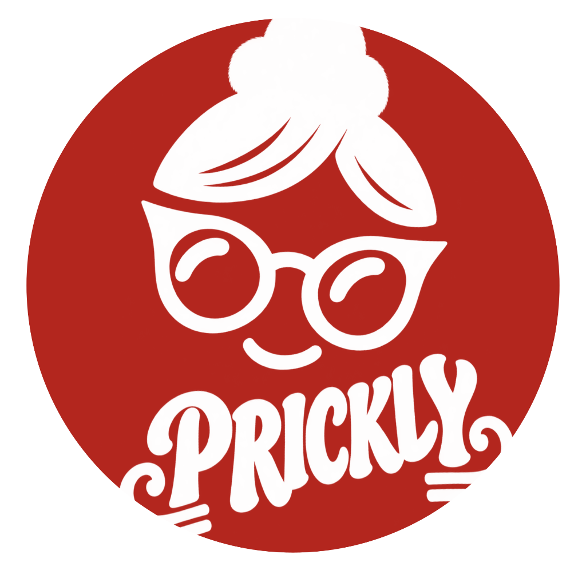

Evalathan is one evaluation harness: a local platform that runs many separate checks and writes each result beside the others, instead of hiding everything behind one opaque number. It houses four routing engines - Hydra, Dehydrus, Benchrex, and Biasrex. Each engine conducts a set of evalers (current total: forty). Currently only Hydra is operational. Hydra is the conductor for sixteen software evalers. Dehydrus is the conductor for eight LuDaTs evalers under PRETRUWs. LuDaTs methodology framework is a subset of PRETRUWs. Benchrex is the conductor for ten deprecation / cite-fitness evalers. Biasrex is the conductor for six bias-gate evalers under the Cognitive Bias Codex lineage. Scoring and benching entries use Score Constitution plus Simplespeak and Techspeak. Definition-only entries skip Score Constitution and keep Simplespeak and Techspeak.
 What is counted, whether that count is a yes-or-no pass, and the three endings a evaler can have. Measured means the file or the code was there and a result was written. Claim means a sentence is on disk and this run did not re-check it. Blank means the needed record is missing. A blank is not a fail and not a zero.
What is counted, whether that count is a yes-or-no pass, and the three endings a evaler can have. Measured means the file or the code was there and a result was written. Claim means a sentence is on disk and this run did not re-check it. Blank means the needed record is missing. A blank is not a fail and not a zero.
 Explanations in simple terms.
Explanations in simple terms.
 More technically detailed explanations.
More technically detailed explanations.
The life-cycle gate on each evaler (G0 through G12) is the station's place in the life of a product. There are not sixteen gates. There are sixteen evalers.

Evalathan
Evalathan (portmanteau of Evaluation and Leviathan) is one evaluation harness. It is not a seventeenth Hydra score and not a ninth Dehydrus score.
Hydra writes sixteen software evalers, in this order: Devly, Archly, Codely, Refactorly, Mixly, Runly, Levi, Menschly, Tokely, Pressly, Triadly, Chorely, Trajectly, Warrantly, Domly, Stackly.
Dehydrus writes eight LuDaTs (Limited-universe Data Test sets) evalers under PRETRUWs, in this order: Copernly, Keplerly, Galileoly, Darwinly, Mendly, Einsteinly, CurCuriely, Newtonly.
Benchrex writes ten deprecation evalers, in this order: Saturly, Contamly, Skewly, Annotly, Obsoletely, Assumly, Driftly, Assessly, Reportly, Notifyly.
Biasrex writes six bias-gate evalers, in this order: Filterly, Meaningly, Hastely, Memoryly, Confirmly, Automately.
The rooms stay apart. A blank is not a fail and not a zero. Evalathan does not fold the rooms into one number, and it does not award a state-of-the-art stamp. The Hydra PRD (Product Requirements Document) line and the Dehydrus HabTwin filename line are utilities, not extra evalers.

One harness. Four routing engines. It does not add a score.
The house that holds four routing engines. Only Hydra is operational today. Hydra walks the software life of a product. Dehydrus walks eight locked physical worlds. Benchrex and Biasrex have glossary rooms; they are not live-wired yet. You do not get one grade for the house. You get separate reports, each evaler named, and a missing record stays missing.
Evalathan is the local runner and the saved product name on both reports. No arguments, or desk, opens the Hydra window (heading HYDRA). evalathan dehydrus opens the Dehydrus window (heading DEHYDRUS). A Hydra scan writes sixteen evalers and a PRD presence line; the report body starts with Evalathan v0.2. A Dehydrus scan writes eight evalers and a HabTwin filename line; the report body starts with Evalathan v0.3. Stackly accepts the earlier Hydra evalers. Newtonly accepts the earlier Dehydrus evalers and stays deferred until Keplerly and Galileoly both show a sealed world. If either room's count is wrong, or a name is repeated, that run stops. The rooms do not share a vector.

Hydra
Hydra calls the sixteen evalers and writes each report beside the others. She counts how many ran, how many passed their own gate, and how many are deferred. She does not turn a blank into a zero, and she does not fold the sixteen into one number. She is not a seventeenth score.

She calls the sixteen. She does not add a score.
The conductor. She points at each player and writes down what that player reported. She does not hand the room a single grade for the whole concert.
Desk route id hydra. Sixteen evalers, in this order: Devly, Archly, Codely, Refactorly, Mixly, Runly, Levi, Menschly, Tokely, Pressly, Triadly, Chorely, Trajectly, Warrantly, Domly, Stackly. conduct walks that order. Stackly is the one that receives the earlier evalers, because that evaler accepts them. The headline of the report is how many ran, how many passed their own gate, and how many are deferred. The saved record names the conductor Hydra. If the count is not sixteen, or a name is repeated, the run stops. The window heading is HYDRA.

Dehydrus
Dehydrus calls the eight LuDaTs evalers and writes each report beside the others. He counts how many ran, how many passed their own gate, and how many are deferred. He does not turn a blank into a zero, and he does not fold the eight into one number. He is not an eighteenth Hydra score. He also prints a HabTwin filename line. That line is a utility, not a ninth evaler.

He routes the eight. He does not add a score.
The other conductor. Hydra watches software. Dehydrus watches locked physical worlds. Open evalathan dehydrus for his window. The heading is DEHYDRUS.
evalathan dehydrus opens the desk. evalathan dehydrus scan <path> writes eight evalers: Copernly, Keplerly, Galileoly, Darwinly, Mendly, Einsteinly, CurCuriely, Newtonly. Newtonly accepts the earlier evalers and stays deferred until Keplerly and Galileoly both show a sealed world. The saved record names the conductor Dehydrus and the paradigm PRETRUWs. If the count is not eight, or a name is repeated, the run stops. Dehydrus is a conductor (orchestration engine / router), not a utility and not one of the eight.

Benchrex
Benchrex (Benchmark + rex) is the routing conductor for deprecation / cite-fitness evalers. He calls ten evalers and writes each report beside the others. He counts how many ran, how many passed their own gate, and how many are deferred. He does not turn a blank into a zero, and he does not fold the ten into one number. He is not a seventeenth Hydra score and not a ninth Dehydrus score. The criterion set follows Deprecating Benchmarks: Criteria and Framework (Ayrton San Joaquin, Rokas Gipiškis, Leon Staufer, Ariel Gil; TAIG @ ICML 2025; arXiv:2507.06434; also AI Standards Lab). Evaler card art is Ed Slop (Educational Slop). The desk names are live; live conduct() for Benchrex is still held.
He calls the ten. He does not add a score.
The bench-deprecation conductor. Hydra grades software. Dehydrus grades locked physical worlds. Benchrex asks whether a claimed benchmark is still fit to cite. A missing Deprecard-style pack stays blank - not a fail and not a zero.
Desk route id benchrex. Ten evalers, in this order: Saturly, Contamly, Skewly, Annotly, Obsoletely, Assumly, Driftly, Assessly, Reportly, Notifyly. The first seven map 1:1 to the paper's soft criteria (saturation, contamination, statistical bias, high annotation error, task obsolescence, invalidated assumptions, semantic drift). The last three map the paper's assessment - reporting - notification process. Soft heuristics, not hard cutoffs. Rooms stay unmerged.

Biasrex
Biasrex (Bias + rex) is the routing conductor for decision-quality / cognitive-bias gate evalers. He calls six evalers and writes each report beside the others. He counts how many ran, how many passed their own gate, and how many are deferred. He does not turn a blank into a zero, and he does not fold the six into one number. He is not a seventeenth Hydra score, not a ninth Dehydrus score, and not an eleventh Benchrex score. The room is a curated subset of the Cognitive Bias Codex tradition (Buster Benson's four problems; John Manoogian III poster; Wikipedia: Cognitive bias; bias.wiki) - never one evaler per Codex leaf. Evaler card art is Ed Slop (Educational Slop). Live conduct() for Biasrex is still held.
He calls the six. He does not add a score.
The bias-gate conductor. He does not grade ~180 named biases. He grades six runnable gates built from the Codex's four problems (filter / meaning / haste / memory) plus confirmation and automation trust. A missing mitigation artifact stays blank.
Desk route id biasrex. Six evalers, in this order: Filterly, Meaningly, Hastely, Memoryly, Confirmly, Automately. See also Cognitive Bias Codex. Matching a psych pattern is not proof the product 'has' the bias (PsyAgentBench warning). No composite bias score.

Cognitive Bias Codex
Definition-only. The Cognitive Bias Codex rearranges Wikipedia's long cognitive-bias inventory into four evolutionary problems (Buster Benson), drawn as a radial poster (John Manoogian III). bias.wiki is an interactive explorer of that map. Evalathan does not import ~175-188 leaves as evalers. Biasrex keeps six curated evalers.

A teaching map of many named biases, not a ready-made test harness. Too much information - filter. Not enough meaning - fill stories. Need to act fast - jump. What to remember - compress. Those four problems become Filterly, Meaningly, Hastely, and Memoryly.
Primary references: Cognitive Bias Codex (SVG) (Wikimedia Commons); Wikipedia Cognitive bias; List of cognitive biases; Benson four-problem cheat sheet; UNC SOG Codex poster; bias.wiki. Dimara et al. 2020 (~154 biases / 7 tasks) is the better test-design taxonomy. Malberg et al. ACL 2025 curates ~30 LLM bias tests - evidence that serious work does not ship 180 evalers. Confirmly and Automately add confirmation bias and automation bias gates with interactive falsification in mind.

Saturly
Checks whether a cited benchmark is saturated - scores near a ceiling so further gains lose discrimination. Looks for flat curves, near-perfect leaderboards, or explicit saturation notes. Pass = saturation evidence is documented or ruled out with a method note. Fail = cite claims SOTA without addressing saturation. Blank = no benchmark claim pack.
A test that everyone aces stops separating the strong from the stronger. When scores hug the ceiling, another point of 'progress' barely tells you anything new about real capability. Saturly asks whether the cited bench still has headroom to discriminate - or whether you are citing a flattened exam as if it still ranks models. Asks: is this bench still hard enough to tell models apart?
Maps paper criterion Saturation in Deprecating Benchmarks: Criteria and Framework (San Joaquin, Gipiškis, Staufer, Gil; TAIG @ ICML 2025; arXiv:2507.06434; also AI Standards Lab). Saturation means the benchmark has reached or approached its evaluation ceiling so further gains give limited information about true capabilities; nuanced improvements may go undetected (paper cites MMLU (Massive Multitask Language Understanding), GSM8K (Grade School Math 8K), and HumanEval as observed cases). Saturly grades whether a cite or leaderboard pack documents flat curves, near-ceiling scores, or an explicit saturation stance - instead of selling SOTA (state-of-the-art) on a saturated exam as fresh discrimination. Partial deprecation may still apply when components retain utility; full retire when the ceiling kills the measure. The paper treats criteria as soft, case-law-like heuristics - not rigid binary cutoffs with numeric thresholds (Section 3). A blank is not a fail and not a zero.

Contamly
Checks contamination / leakage risk on a claimed score - train-test overlap, memorization signals, or missing holdout honesty. Pass = contamination stance is stated with evidence or a holdout method. Fail = public score presented as generalization with no leakage discussion. Blank = no score pack.
If the model already saw the answer key - through leakage, memorization, or train-test overlap - a high score is not generalization. It is rehearsal. Contamly asks whether anyone stated a contamination stance with evidence or a holdout method, or whether a public number is presented as if the test stayed unseen. Asks: did the model see the test?
Maps paper criterion Contamination in Deprecating Benchmarks: Criteria and Framework (San Joaquin, Gipiškis, Staufer, Gil; TAIG @ ICML 2025; arXiv:2507.06434; also AI Standards Lab). When models memorize benchmark data through leakage or contamination, performance no longer reflects true generalization on the claimed capability. The paper notes multiple observed leakage cases and stays method-agnostic on fully public benches vs private holdouts (footnote 3 - out of scope). Contamly grades whether the claim pack states a contamination / leakage stance with evidence, audit, or holdout honesty - not whether Evalathan itself can prove membership. Paper: contamination often suits partial deprecation (remove leaked items, resample) rather than automatic full retire. The paper treats criteria as soft, case-law-like heuristics - not rigid binary cutoffs with numeric thresholds (Section 3). A blank is not a fail and not a zero.

Skewly
Checks statistical bias / class or label imbalance that a model could exploit without the claimed capability. Pass = balance or stratified metrics are shown. Fail = overall accuracy hides a broken minority class. Blank = no distribution note.
An uneven stack of labels can fake competence. Nail the common class, ignore the rare one, and the headline accuracy still looks fine. Skewly asks whether the score rides class or label imbalance - or whether balance and stratified metrics are on the record. Asks: is the score riding an uneven label stack?
Maps paper criterion Statistical bias in Deprecating Benchmarks: Criteria and Framework (San Joaquin, Gipiškis, Staufer, Gil; TAIG @ ICML 2025; arXiv:2507.06434; also AI Standards Lab). Poorly balanced classes or label distributions skew results so models exploit imbalance instead of showing the intended capability (paper example: anomaly detection won by majority-benign accuracy while missing minority anomalies). Skewly grades whether distribution notes, stratified metrics, or rebalance evidence exist for the cited score. Paper: statistical bias often suits partial deprecation via corrective resampling or rebalancing. The paper treats criteria as soft, case-law-like heuristics - not rigid binary cutoffs with numeric thresholds (Section 3). A blank is not a fail and not a zero.

Annotly
Checks high annotation / label error evidence behind the number (human or auto labelers). Pass = error audit or quarantine note exists. Fail = cite ignores known label-error reports. Blank = no annotation quality record.
A grade is only as clean as the answer key. Human or auto labelers can plant errors that make every model look wrong - or look right for the wrong reason. Annotly asks whether anyone audited annotation quality, or whether known label-error reports were ignored while the cite kept traveling. Asks: are the labels clean enough to trust the grade?
Maps paper criterion High annotation error rate in Deprecating Benchmarks: Criteria and Framework (San Joaquin, Gipiškis, Staufer, Gil; TAIG @ ICML 2025; arXiv:2507.06434; also AI Standards Lab). Errors from creators or labelers (human or automated) compromise benchmark quality and make model evaluations unreliable (paper example: Gema et al. 2024 - 57% errors in analysed MMLU Virology items; 6.49% of all MMLU questions erred). Annotly grades whether an error audit, quarantine, or correction note exists for the cited bench. Paper: minor correctable labeling may warrant partial deprecation with documented fixes; large flawed slices may need full or subset retire. The paper treats criteria as soft, case-law-like heuristics - not rigid binary cutoffs with numeric thresholds (Section 3). A blank is not a fail and not a zero.

Obsoletely
Checks task obsolescence - whether the benchmark task still matches the capability being claimed. Pass = relevance argument is on disk. Fail = obsolete task sold as current skill. Blank = no task-relevance note.
Some exams stay on the board out of habit long after the task stopped mattering - or after the field already solved it. Familiarity is not relevance. Obsoletely asks whether the underlying task still matches the capability you claim, or whether inertia is keeping a dead exam alive as a progress signal. Asks: is this still the right exam for what you claim?
Maps paper criterion Task obsolescence in Deprecating Benchmarks: Criteria and Framework (San Joaquin, Gipiškis, Staufer, Gil; TAIG @ ICML 2025; arXiv:2507.06434; also AI Standards Lab). A benchmark may become obsolete when the underlying task is no longer relevant or has effectively been solved; continued use from familiarity or research inertia yields misleading progress and wasted resources. Related to saturation, but focused on evolving task relevance, not score ceilings (paper example: BIG weighing bag-of-letters word generation equally with causal reasoning - the former may be obsolete for reasoning models). Obsoletely grades whether a relevance argument is on disk for the claimed use. Paper: task obsolescence typically pushes toward full deprecation when the task no longer fits the use context. The paper treats criteria as soft, case-law-like heuristics - not rigid binary cutoffs with numeric thresholds (Section 3). A blank is not a fail and not a zero.

Assumly
Checks invalidated design assumptions (for example a no-tool exam used to grade a tool-using agent). Pass = assumptions vs current use are stated. Fail = old assumptions silently reused. Blank = no assumption note.
Every bench rests on simplifying ground rules. When the field moves - tools, RAG (retrieval-augmented generation) multi-hop, agent loops - those rules can go stale without anyone rewriting the exam. Assumly asks whether the original assumptions still hold for how the score is being used today. Asks: did the ground rules change under the score?
Maps paper criterion Invalidated assumptions in Deprecating Benchmarks: Criteria and Framework (San Joaquin, Gipiškis, Staufer, Gil; TAIG @ ICML 2025; arXiv:2507.06434; also AI Standards Lab). Benchmarks rely on simplifying assumptions that can become inappropriate as the field evolves; when they fail, the bench no longer reflects real-world complexity or task diversity (paper example: Needle-in-a-Haystack single-fact retrieval vs real RAG (retrieval-augmented generation) that retrieves and reasons over multiple pieces; long-context LLM (large language model) retrieval tests). Assumly grades whether assumptions vs current use are stated for the cite. Paper: invalidated assumptions typically require full deprecation when fundamental misalignment exists. The paper treats criteria as soft, case-law-like heuristics - not rigid binary cutoffs with numeric thresholds (Section 3). A blank is not a fail and not a zero.

Driftly
Checks semantic / cultural / language drift since the claimed result - labels or meanings that aged. Pass = drift review or refresh date exists. Fail = stale meanings treated as fixed. Blank = no drift pack.
Datasets freeze at creation. Words, labels, and cultural associations keep moving. A tag that meant one thing in the collection year can mean another now - and the score still pretends the dictionary never changed. Driftly asks whether anyone refreshed meanings, or whether stale labels are treated as fixed truth. Asks: do the words on the bench still mean what they meant?
Maps paper criterion Semantic drift in Deprecating Benchmarks: Criteria and Framework (San Joaquin, Gipiškis, Staufer, Gil; TAIG @ ICML 2025; arXiv:2507.06434; also AI Standards Lab). Over time the meaning or interpretation of a task or its labels can shift, as word meanings and cultural associations do (paper cites Kutuzov et al. 2018; Luccioni et al. 2022 on datasets as static / frozen at creation). As language, context, or social conventions evolve, benches can become outdated or unrepresentative. Driftly grades whether a drift review, refresh date, or label-semantics note exists for the cited pack. The paper treats criteria as soft, case-law-like heuristics - not rigid binary cutoffs with numeric thresholds (Section 3). A blank is not a fail and not a zero.

Assessly
Process evaler. Checks whether a project or governance actor ran a deprecation assessment against the soft criteria (Deprecard-shaped evidence pack). Pass = assessment artifact exists. Fail = deprecation claimed with no assessment. Blank = process not started. Not wired as a live simulator in the default install yet.
Deprecation is not a vibe. Someone has to actually check the soft criteria - saturation curves, literature critique, community feedback - and decide partial upgrade vs full retire, with room for appeal. Assessly asks whether that assessment pack exists, or whether 'deprecate it' was said with no evidence trail. Asks: did anyone actually assess whether to deprecate?
Maps the paper's assessment phase in Deprecating Benchmarks: Criteria and Framework (San Joaquin, Gipiškis, Staufer, Gil; TAIG @ ICML 2025; arXiv:2507.06434; also AI Standards Lab) (Section 4.1). Assessment decides whether deprecation is necessary by weighing impacts and which components remain valid against the Section 3 criteria. It should run regularly: track saturation curves, read emerging critique, solicit feedback from users and curators. Deprecation level (partial vs full) depends on issue nature - e.g. bias/contamination often correctable; task obsolescence / invalidated assumptions often full. Governance actors should offer a formalized appeals path (contact, timeline, partial-deprecation proposals, independent review). Assessly grades whether a Deprecard-shaped assessment artifact exists. Pass = assessment artifact exists. Fail = deprecation claimed with no assessment. Blank = process not started. Not wired as a live simulator in the default install yet. A blank is not a fail and not a zero.

Reportly
Process evaler. Checks whether assessment findings were reported in a durable, citable form (Deprecard / changelog / advisory). Pass = report artifact exists. Fail = silent deprecation talk. Blank = no report. Not wired as a live simulator in the default install yet.
A silent deprecate leaves everyone citing ghosts. The paper wants a durable deprecation report: rationale, risks, full vs partial scope, what remains valid, how to read old scores, timelines, alternatives, and who to contact. Reportly asks whether that writeup exists where others can find it. Asks: was the deprecation decision written down where others can find it?
Maps the paper's reporting phase in Deprecating Benchmarks: Criteria and Framework (San Joaquin, Gipiškis, Staufer, Gil; TAIG @ ICML 2025; arXiv:2507.06434; also AI Standards Lab) (Section 4.2). The deprecation report must state clear rationale and underlying risks, backed by assessment evidence; give explicit future-use instructions (full vs partial / which tasks or subcomponents); for upgrades, say what remains valid and how past usage should be reinterpreted; include timelines, harm-mitigation, alternatives if any, authorized archival/research use, actor identity and contacts (contextual transparency), and - when a governance actor writes it - an appeals path. Paper appendices show sample Deprecard-style reports (e.g. SWE-bench (Software Engineering Bench) illustrations). Reportly grades whether a durable, citable report artifact exists (Deprecard / changelog / advisory). Pass = report artifact exists. Fail = silent deprecation talk. Blank = no report. Not wired as a live simulator in the default install yet. A blank is not a fail and not a zero.

Notifyly
Process evaler. Checks whether users and dependents were notified (partial update vs full retire; third-party path when creators will not act). Pass = notification channel or advisory exists. Fail = users left on a dead cite. Blank = no notify pack. Not wired as a live simulator in the default install yet.
Assessment and a report still fail if dependents never hear. Notices should hit the same channels as the original publish, mark catalogs like a retraction, and - when creators will not act - let governance actors carry third-party deprecation lists. Notifyly asks whether the people still citing this bench were told. Asks: did the people still citing this bench get notified?
Maps the paper's notification phase in Deprecating Benchmarks: Criteria and Framework (San Joaquin, Gipiškis, Staufer, Gil; TAIG @ ICML 2025; arXiv:2507.06434; also AI Standards Lab) (Section 4.3), including governance-list paths. Notification prevents continued use and reduces ecosystem disruption: prefer the same channels as the original publication; use clear visual / metadata markers in catalogs (retraction-like); notify key users whose evals may be invalidated; version-control upgrades so original vs modified stay distinct. When creators are unavailable or refuse, third-party governance actors may deprecate via curated deprecation lists with extra transparency (Sections 4 and 6). Notifyly grades whether a notification channel, advisory, or list inclusion exists. Pass = notification channel or advisory exists. Fail = users left on a dead cite. Blank = no notify pack. Not wired as a live simulator in the default install yet. A blank is not a fail and not a zero.

Filterly
Grades attention / selection / availability hygiene in eval design and agent pipelines (Benson problem: too much information). Looks for cherry-pick guards, sampling notes, or filter-bias tests. Pass = mitigation artifact or explicit non-claim. Fail = leaderboard cherry-pick with no filter note. Blank = no pack.
Imagine a loud market where every stall shouts at once. You cannot hear them all, so your brain keeps the vivid, recent, and repeated bits and drops the rest. Filterly asks whether your eval design or agent pipeline did that filter on purpose - with a fair sampling note - or quietly cherry-picked the loud stalls that make the score look good. Asks: too much noise, did you filter fairly?
Maps Buster Benson's Codex problem Too much information (Cognitive bias cheat sheet; Cognitive Bias Codex; bias.wiki). When the world dumps more signal than working memory can hold, attention uses cheap tricks - availability, selective attention, mere exposure, frequency illusion - so some evidence is kept and most is discarded. Filterly grades whether a claimed score or agent run documents that filter (sampling plan, inclusion/exclusion, cherry-pick guard, or filter-bias test) instead of presenting a convenience slice as the whole field. Related leaf families include availability heuristic and attentional bias; Biasrex does not grade one Wikipedia leaf per name. Pass = mitigation artifact or explicit non-claim. Fail = leaderboard cherry-pick with no filter note. Blank = no pack. A blank is not a fail and not a zero.

Meaningly
Grades story-filling vs evidence (Benson problem: not enough meaning). Looks for narrative claims backed by artifacts (Warrantly-adjacent). Pass = claims cite inspectable evidence. Fail = stereotype or story without a source. Blank = no claim pack.
After the filter, only scraps remain - and the mind hates a blank map. It connects dots, fills gaps with what it already believes, and invents a neat story so the scraps feel like a world. Meaningly asks whether your claims are still tied to inspectable evidence, or whether the story did the work the facts never did. Asks: not enough facts, did you invent a neat story?
Maps Benson's Codex problem Not enough meaning (cheat sheet; Codex; bias.wiki). After information is reduced, people still need a usable model, so they fill gaps with prior beliefs - confabulation, clustering illusion, anecdotal fallacy, illusion of validity, neglect of probability, and related story-filling moves. Meaningly grades narrative or stereotype claims in eval writeups and agent rationales: do they cite artifacts a reader can open (logs, citations, Warrantly-adjacent evidence), or does the plot stand alone? Pass = claims cite inspectable evidence. Fail = stereotype or story without a source. Blank = no claim pack. Matching a psych pattern is not proof the product 'has' the bias. A blank is not a fail and not a zero.

Hastely
Grades overconfidence, sunk-cost, and irreversible-action gates in agent loops (Benson problem: need to act fast). Pass = stop / review gates or haste tests exist. Fail = always-act loops with no brake. Blank = no trajectory pack.
Sometimes waiting feels more dangerous than moving. Under time pressure the brain bets fast - overconfidence, sunk cost, illusion of control - and skips the brake that would have caught a bad path. Hastely asks whether your agent loop or decision pack still has a stop/review gate when urgency is loud. Asks: need to move now, did you skip the brake?
Maps Benson's Codex problem Need to act fast (cheat sheet; Codex; bias.wiki). Limited time and incomplete information force action; without speed we stall, but speed without a brake licenses overconfidence effect, optimism bias, illusion of control, sunk-cost continuation, and always-act loops. Hastely grades whether trajectories, runbooks, or agent graphs show an explicit stop, escalate, or human-review gate before irreversible tools fire - not whether the operator felt sure. Pass = stop / review gates or haste tests exist. Fail = always-act loops with no brake. Blank = no trajectory pack. A blank is not a fail and not a zero.

Memoryly
Grades continued influence of old scores, stale memory, and deprecated cites (Benson problem: what should we remember?). Pass = memory refresh / deprecation link exists. Fail = obsolete scores kept as live truth. Blank = no memory policy.
Memory is not a perfect hard drive. It keeps generalizations and standout moments, then feeds those leftovers back into tomorrow's filters and stories - even after the world changed. Memoryly asks whether old scores, caches, and cites are still treated as live truth, or whether someone refreshed what stuck. Asks: what stuck in memory, is it still true?
Maps Benson's Codex problem What should we remember? (cheat sheet; Codex; bias.wiki). Storage is selective: generalizations beat specifics; standout items survive; forgotten detail never corrects the next filter. Related families include false memory, source confusion / misattribution, suggestibility, and continued influence of retracted information. Memoryly grades whether eval products and agent stores refresh, version, or deprecate retained scores and cites instead of letting obsolete numbers keep steering decisions. Pairs with Benchrex deprecation evalers when the stale item is a benchmark claim. Pass = memory refresh / deprecation link exists. Fail = obsolete scores kept as live truth. Blank = no memory policy. A blank is not a fail and not a zero.

Confirmly
Grades confirmation-bias gates - seeking only agreeing evidence. Looks for adversarial / falsification prompts or red-team notes. Pass = disconfirming check exists. Fail = only confirming samples. Blank = no confirm protocol. Interactive falsification preferred over keyword scans. Not fully wired in the default install yet.
Once a hypothesis feels like 'yours,' search tends to hunt for yes. Disagreeing evidence gets skipped, ambiguous evidence gets bent, and memory rehearses the wins. Confirmly asks whether your protocol forced a look for no - a disconfirming check - or only collected agreeing samples. Asks: did you only look for yes?
Named after confirmation bias: the tendency to search for, interpret, favor, and recall information that supports prior beliefs, values, or decisions (selective exposure / positive-test strategy; biased interpretation; biased memory). Related: myside bias; one-sided hypothesis tests that never try to falsify. Confirmly is the Biasrex process-style gate for that pattern in eval packs and agent critique loops. It looks for adversarial prompts, red-team notes, holdout counterexamples, or other explicit disconfirming checks - interactive falsification preferred over keyword scans for the word 'bias'. Pass = disconfirming check exists. Fail = only confirming samples. Blank = no confirm protocol. Not fully wired in the default install yet. A blank is not a fail and not a zero.

Automately
Grades automation bias / tool-trust - over-trusting model or tool output without a human or second check. Pass = escalation / verify step exists. Fail = blind tool accept. Blank = no trust policy. Not fully wired in the default install yet.
Tools feel authoritative. When a model, checker, or autopilot speaks, people often accept the suggestion and stop watching the raw evidence - even when the tool is wrong or silent. Automately asks whether trust was earned with a verify/escalate step, or whether the tool got a free pass. Asks: check before trust?
Named after automation bias: the propensity to favor suggestions from automated decision systems and to ignore contradictory non-automated information, even when the latter is correct. Classic error split: commission (follow a bad automated directive) and omission (miss a problem the automation did not flag because monitoring stopped). Automately grades agent-tool and model-assist traces for an explicit human or second-system verify / escalate step before irreversible accept - Trajectly-adjacent evidence, not a seventeenth Hydra score. Pass = escalation / verify step exists. Fail = blind tool accept. Blank = no trust policy. Not fully wired in the default install yet. A blank is not a fail and not a zero.

Scans root and documentation directories for dedicated architectural manifests (e.g., ARCHITECTURE.md, /docs/architecture, C4 models, or ADR logs). Returns Pass if an architectural document exists, Fail if absent, and Deferred if docs are unparsable. It does not grade whether the architecture itself is optimal.
Before you buy a house, you check if blueprints exist. Archly checks if the software comes with a clear structural plan or if it was built blindly on the fly.
The public contents of the 97 principles are listed at 97 Things Every Software Architect Should Know. MoE means that panel of expert authors, more than 50 of them. Their published lessons are the checklist. They do not log in and score the repository.
The scan reads the README and markdown under docs, doc, architecture, or adr. A principle is scored only when a file in this tree is evidence for it: 4 Strong when a document and a matching artifact both cite it, 3 Solid when one of those is present, 2 Emerging when only the README mentions it. A principle with no evidence stays deferred and is not entered as zero. The mean is the mean of the scored principles. It is not a pass. The international description of an architecture review is ISO/IEC/IEEE 42030. Archly does not issue that certificate. The same evidence rule scores five institutional standards beside the 97, and their mean is not folded into the 97 mean: NASA Technology Readiness Level, ISO/IEC 25010, ISO/IEC/IEEE 42030, SEI ATAM, and AWS Well-Architected.

Parses agent orchestrator configurations (e.g., YAML/JSON agent rosters) to tally registered agent identities, designated system prompts, and tool authorizations. Identifies unassigned workers or overlapping, ambiguous responsibilities.

The organizational chart for an AI bot team. It ensures every digital worker has a specific job title, defined tools, and clear duties so they don't trip over each other while working.
Roster files are agent_registry.md, agents.md, agentic_registry.md, or any markdown file inside a folder named agents. Rows that start with a bold table cell are counted. SASPIANT (Specific and Specialized, Pain-In-the-Ass, Non-critical Tasks) is the question the roster is for: is this a narrow chore, or a person-shaped decision. Chorely counts. It does not answer that question for you.

Parses supported Abstract Syntax Trees (ASTs) to compute cyclomatic and decision complexity points (counting if, elif, switch/match, for, while branches). Files in unsupported languages remain Blank/Deferred (which does not count as a pass or zero).

Like counting how many forks, roundabouts, and blind turns are on a road. Fewer turns make driving smooth; too many forks mean drivers (and programmers) are prone to getting lost or crashing.
The Python pack walks the syntax tree and counts if, for, while, except, with, and assert nodes inside functions. Named packs that are not executed in this version: JavaScript, TypeScript, C, C++, Rust, Go, and Java. An unknown suffix is a blank whose summary says it is not a pass. pytest, coverage, radon, and ISO/IEC 5055 are not launched. ISO/IEC 5055 is automated source-code quality measures. A radon run is not a 5055 result, and this scanner does not produce one.

Scans the repository's .git tree. Counts total historical commits, change intervals, and branch merges. Requires a valid local git history; repositories without git metadata return a Deferred status. This is an objective measurement of repository activity, not an assessment of developer ability or code quality.

Think of it like a construction site logbook. It doesn't judge whether the architect is a genius; it simply verifies that workers have consistently shown up and laid bricks on the schedule they claim.
The scan runs git rev-list --count HEAD when a .git folder is present and writes that integer. passed stays empty. If there is no git history, the evaler is blank. Skills Framework for the Information Age (SFIA, a job-skill scale for technology work) is named so that nobody reads a level into the commit count. Devly does not award an SFIA level. The public framework is at sfia-online.org.

Evaluates project-supplied question-and-answer manifests. Computes the coverage ratio and exact match/similarity score against a validated golden dataset. Distinct from generic unit tests - focuses on domain/subject-matter accuracy.

A subject-matter final exam. It tests how well your application answers specialized, real-world industry questions against an official answer key.
JSON or YAML files whose names contain question or answer are read. Questions are counted. Answers are matched by id when an answers file exists. passed stays empty. Runly and Codely remain the stations for a language conformance suite.

Scans for structured usability audit records, heuristic evaluations, or accessibility scorecards (e.g., WCAG compliance logs, UX benchmark JSONs). Marketing sentences or vague promises of "great UX" in a README yield no score.

Customer reviews backed by verifiable receipts. Instead of taking the developer's word that their app is "intuitive and user-friendly," Levi checks for actual recorded usability testing.
The file must be JSON whose family or brand contains 4uval, with a gate object. The summary prints gate.mean and gate.result. 4Uvals (Ultimate User-User-User evaluations) is the ten-check user-first scorecard, defined at that entry. ISO/IEC 42001 is an AI management system for a firm. Levi names it as a wrapper beside the sitting. It is not the grade. Levi prints the mean and the gate that are already on the card. It does not rescore the ten checks.

Inspects client-facing components for actual code-level pacing controls, break intervals, or integrated session switches (such as the repository's fuss/ module). General wellness advice written in markdown does not count as an implementation.

Checking if a car comes equipped with working seatbelts and speed limit warnings. It makes sure the software contains real code that encourages healthy work breaks, rather than quietly enabling non-stop screen addiction.
A Python function named bind_fuss or bindfuss, or an assignment to session_limit_minutes, is a timer. In JavaScript, function bindFuss is a timer, including the copy in fuss/fuss.js. A file whose name is fuss is a timer. The provisional phrases are "take a break", "session limit", and "time budget". The bare word fuss is not enough. FUSS (For-User Session Switch) is the drop-in panel in fuss/README.md. This is not a medical device and not an ISO certificate.

Scans the project tree, aggregates Source Lines of Code (SLOC) by file extension, and calculates the exact percentage distribution across languages while ignoring third-party vendor directories (e.g., node_modules/, site-packages/). Reports pure data without prescribing stack changes.

The ingredients label on a cereal box. It tells you exactly what percentage is wheat, corn, or sugar so you know what you are consuming before you take a bite.
Suffixes map to a language name: Python, JavaScript, TypeScript, C, C++, Rust, Go, Java, Kotlin, Ruby, PHP, C#, Swift, MEL, and VEX. The summary is a percentage of recognized files. Mixly does not parse those files and does not rank the languages.

Extracts metrics from existing compression logs, specifically recording raw byte reduction alongside objective image/video quality scores (e.g., SSIM, PSNR, VMAF, or CRF values). Pressly does not execute the compression pipelines during the evaluation scan.

Inspecting a vacuum-sealed suitcase. Pressly checks the luggage tag to confirm you actually shrank the package down to carry-on size without crushing the fragile items inside.
Logs, text, JSON, and markdown are scanned for ssim, vmaf, or bytes/size followed by a colon or an equals sign and a number. SSIM (structural similarity, a picture-likeness score) is described at Wikipedia. VMAF (Video Multi-Method Assessment Fusion, Netflix's video-quality score) is at Netflix/vmaf. A match is reported as a printed figure. It is not a TOKEX result.

Analyzes token-similarity and line duplication across files, cross-references internal function/class call graphs for orphaned/dead declarations, and tallies git change frequency per file. Flags files with high churn-to-complexity ratios as refactoring liabilities.

An inspector checking your house for duplicate furniture you bought twice, abandoned rooms in the attic that nobody uses, and a back door that squeaks so badly it needs weekly repairs.
Identical-byte groups are SHA-256 matches among files between 1 and 200,000 bytes. Unused names are Python functions and classes that are defined and never referenced, skipping names that start with _ or test. Change is git log --numstat over the last 40 commits when git exists. The unused-name walk is the one language-specific check in this version. The copy check and the change check apply to whatever files are in the tree. When those spots are not the job, and the living tree itself has to come off, that case is Deglove (Refactoring).

Measures wall-clock execution time for defined micro-benchmark routines or parses valid, pre-computed benchmark artifacts (e.g., pytest-benchmark JSON output). Defers execution if no executable targets or saved logs are present in the target directory.

A quick 100-meter sprint test. It checks how fast your software actually runs on the track right now, rather than trusting how fast the sales brochure claimed it was.
Any tree with Python source gets a local microbench: 200,000 integer steps, reported in milliseconds, labeled as an Evalathan microbench. Files whose names contain pyperformance, spec2017, or llvm-test-suite are noted and not executed. SPEC CPU is the industry suite at spec.org. The LLVM test suite is a compiler project, not a file this scanner invents. ISO/IEC 25010 describes product quality, including performance efficiency. Runly does not compute a 25010 score.

Aggregates findings from the other 15 evaluators into a clean report matrix. Explicitly prohibits flattening heterogeneous measurements into a misleading single 0-100 score. Preserves Pass, Fail, and Deferred states as independent data points.

A detailed medical blood panel instead of a single 1-to-10 wellness score. It tells you exactly what is healthy, what needs attention, and what wasn't tested, giving you total transparency.
ACCEPTS_PRIOR is set, so Hydra passes the earlier evalers in. passed stays empty on purpose. The headline of the report is the same vector: ran, passed, deferred.

Ingests structured LLM transaction logs containing baseline and optimized token usage pairs. Calculates the net token delta (Tokens before - Tokens after). If token records are not saved in the target path, the evaler is marked Deferred rather than zero.
A fuel economy tracker for AI apps. It measures how much gas (tokens) your prompts burned before vs. after tuning to make sure you aren't wasting money on bloated queries.
JSON may use before and after, or total_tokex and tokex_this_run, including those keys inside a tokex object. TOKEX (Token Expenditure) is the name of that count. Tokely does not import a tokenizer and does not call a model. Pressly's byte counts are a different measurement.

Analyzes sequential execution logs of agentic tasks. Counts total steps taken, tool call frequencies, backtracking loops, and final task resolution states. Disregards third-party leaderboard claims that lack inspectable raw trace files.

The flight data recorder (black box) for an autonomous agent. It tracks every turn the agent took to solve a problem so you can see whether it flew straight to the target or took five dizzying loops.
File names containing trace, trajectory, or passk are read. JSONL lines that parse as JSON are counted as steps. Other matching files count as one step. The summary says the count is from files in the tree.

Validates the presence of an explicit Engineering Priority Triad declaration that orders Cost, Speed/Latency, and Impact. Evaluates whether the team has officially declared which compromise comes first when system constraints collide.

The golden rule of any workshop: "Cheap, Fast, or Good - pick two." Triadly verifies that your team explicitly wrote down which one matters most before building the product.

M3 is the Engineering Priority Triad Triadly reads. Mc (Min Cost) · Me (Max Efficiency/speed) · Mi (Max Impact/quality); order = priority left-to-right. Six orders: McMeMi cheap interceptor drone; McMiMe Shahed-style; MeMcMi ambulance drone; MeMiMc fighter scramble; MiMcMe SEISMO MVP target, impact then cost; MiMeMc NASA rocket and Patriot missile, impact then speed.
The accepted compact orders are mcmemi, mcmime, memcmi, memimc, mimcme, and mimemc, read from the README and from markdown, JSON, and text. The scan looks for those codes with spaces removed. It does not treat the word M3, by itself, as an order. Full M3 write-up: M3.

M3
M3 (Engineering Priority Triad) is the Cost / Efficiency / Impact order Triadly looks for. Mc = Min Cost, Me = Max Efficiency (speed), Mi = Max Impact (quality). A declared left-to-right order is evidence. The bare word M3 is not an order by itself. M3 is not a seventeenth Hydra score.
Cheap, fast, or excellent - write down which comes first before you build. M3 is that written order. Triadly checks whether the tree actually declared one.
Compact orders Triadly accepts (spaces stripped): mcmemi, mcmime, memcmi, memimc, mimcme, mimemc. Sources: README and markdown / JSON / text in the tree. Related: Triadly.

Cross-references listed performance claims and product assertions against linked source code, test seeds, external dataset URLs, or academic citations. Claims without verifiable backing artifacts fail the check.

The "show your work" math test rule. If your software claims to be 10x faster or 99% accurate, Warrantly checks if you provided the actual proof or just made an empty sales pitch.
JSON may be a list of objects with a claim key, or an object with claims or warrants. Backing is any of source, recipe, or evidence. The pass flag is true only when the backed count equals the claim count and the list is not empty.

4Uvals
4Uvals (Ultimate User-User-User evaluations) is a 10-check list. The question is whether a session with an AI actually put the person using it first. Levi reads the card when a copy is in the tree. 4Uvals is not a seventeenth evaler.
The published card is 4Uvals v1.2. First-order means the people who ran that sitting scored it themselves; Levi only prints the mean and gate already on the card. Gate result: PASS. Mean: 3.4 out of 4. Nine of the ten checks are Solid or Strong.
Each check uses a 1-4 scale: 4 Strong, 3 Solid, 2 Emerging, 1 Weak. U5 (retell the work) is Emerging because it was named on the card and not measured. Emerging stays Emerging. It is not rewritten as a fail and not rewritten as zero.
A freeze - the choice to pause the session - is optional on purpose. An adult can leave it off. It is not a lock built for a child.
Sixteen published usability and health standards sit under the card as analogs (comparisons only). They are not mixed into the ten checks and they are not averaged into the 3.4 mean.
4Uvals means Ultimate User-User-User evaluations. In plain terms: ten questions that ask whether this sitting with the AI put the person using it first.
On the published card the answer is PASS: nine of ten checks are Solid or Strong, and the average is 3.4 out of 4. One check - retelling the work - was listed but not measured, so it stays Emerging.
NASA-TLX (NASA Task Load Index - a short form for how hard a task felt) on this card is one educated user scoring 9 out of 100, in the low band 0-24. That is one person's load score. It is not a NASA certificate. The 4Uvals card itself is not an ISO, IEEE, IEC, W3C, FDA, or NASA certificate.
Factual desk example (Evalathan local memo UI): under the same 4Uvals + Menschly mandate, brief and detail memos use warm cream sheet #FFF4E5, soft green evaler bevels #E8F3E8, and body text #2B2B2B (links stay blue) so long technical reads stay easier on the eyes. FUSS and Prickly control hues follow the same eye-comfort pick.
Stamp on the card: 4Uvals v1.2. Ten checks, U1-U10. First-order means the operator scored the sitting. The pass rule on this card is a mean of at least 3.2 and at least 8 of 10 checks Solid or Strong. This card clears both: mean 3.4, and 9 of 10. ISO/IEC 42001 is named beside the sitting as the firm-level wrapper (U4). It is not the sitting grade.
Factual UX example - desk memo palette (4Uvals / Menschly mandate). The Evalathan ui/v2 memo sheet (brief + Nell detail) locks three hexes for long technical reading on a computer desktop: background #FFF4E5 (warm cream), evaler bevel cards #E8F3E8 (soft green), non-link body #2B2B2B. Hyperlinks stay blue. Operator research cue that guided the two sheet hues: two safest color hues/shades for reading memos on computer desktop - soft green + warm cream/ivory as the classic low-strain pair. Policy spine: U9 well-being + U6 FUSS, product spirit Menschly; source pack SEISMO (AZ Signal Engine) docs/evals/4UVALS.md. FUSS Irish-orange controls (#c45c26 / #ff7900) and Prickly lime accent were meticulously selected the same way. Shipped note: BUILDLOG.md v0.3.3.
| ID | Check | Score | Label |
|---|---|---|---|
| U1 | Rubric stem | 3 | Solid |
| U2 | Loyalty language | 3 | Solid |
| U3 | Cite the legal gap | 4 | Strong |
| U4 | Outer wrapper, ISO/IEC 42001 | 3 | Solid |
| U5 | Retell, map then measure then manage | 2 | Emerging |
| U6 | FUSS (For-User Session Switch) instrument | 3 | Solid |
| U7 | Preface discipline | 4 | Strong |
| U8 | Honor the person, and keep freeze optional | 4 | Strong |
| U9 | Well-being axis | 4 | Strong |
| U10 | Footnote only, not medical | 4 | Strong |
The housed sixteen are analogs. An analog is a side-by-side comparison with a published standard. It is not folded into the 4Uvals mean.
| # | Instrument | Analog |
|---|---|---|
| 1 | ISO 9241-210:2019 | 2 Emerging |
| 2 | ISO 9241-110 | 3 Solid |
| 3 | ISO 9241-300 series | 2 Emerging |
| 4 | ISO 9241-400 series | 1 Weak |
| 5 | ISO 10075-1 | 3 Solid |
| 6 | ISO 10075-2 | 2 Emerging |
| 7 | ISO 10075-3 | 1 Weak |
| 8 | ISO/IEC 25019:2023, quality in use | 3 Solid |
| 9 | IEEE 7010-2020 | 3 Solid |
| 10 | WCAG 2.1 (Web Content Accessibility Guidelines) | 2 Emerging |
| 11 | WCAG 2.2 | 2 Emerging |
| 12 | ISO/IEC 40500, the ISO adoption of WCAG | 2 Emerging |
| 13 | IEC 62366-1 | 2 Emerging |
| 14 | NASA-TLX, first-order, one person, 9/100 | 3 Solid |
| 15 | SUS (System Usability Scale) and UEQ+ (User Experience Questionnaire Plus) | 2 Emerging |
| 16 | CVS-Q (Computer Vision Syndrome Questionnaire) | 1 Weak |
H14 on the card is the NASA-TLX row: one educated user, overall 9 out of 100, low band 0-24. SUS and UEQ+ are named. Their item scores are not on the card, so none are printed here. CVS-Q was not administered. None of these sixteen is a certificate.

Braidware
Braidware is the post-4IR (Fourth Industrial Revolution) term that refers to agentics, software and hardware as a single consolidated unit (often sandboxed). It is the 4IR progression of Wearables (wearable technology - body-worn devices with sensors, connectivity, and software). The hardware side often includes on-device small processing units - chips that think on the gadget itself, not only in a far-away cloud.
Braidware is the post-4IR (Fourth Industrial Revolution) braid of three strands: agentics, a software engine, and (when it exists) hardware. That is the unit of spend-time, not Industry 3.0's software-versus-hardware split. Wearables put sensing and apps on the body; Braidware is the 4IR neologism for the next step - the three strands as one unit, not a watch-or-glasses add-on alone. When the braid runs models locally, that is Edge AI (on-device AI - inference on the gadget or near it, not only in the cloud). When sensors and actuators join a connected mesh, IoT (Internet of Things - networked physical devices) applies too; Edge AI is commonly deployed on IoT and wearable nodes.
Headless MCP (Model Context Protocol) and CLI (command-line interface) work stay in the braid.
Good examples include, oldest release to newest: Superbrain (commercial from July 2024); Meta/etc AI Ray Ban glasses which bear their own Edge AI, TinyML, custom framing, cloud and software infusion (Ray-Ban Meta Gen 3 available 23 Sep 2026); Pamir Lapis One: a dedicated Linux box where agentics, engine, and hardware sit as one unit (not a 1996-2011 PDA.) (first units Oct 2026); and most recently Meta's Muse Charm (announced 23 Sep 2026; Meta says shipping December 2026 - not released yet as of 15 Nov 2026).

Deglove (Refactoring)
Not a Hydra evaler and not a seventeenth score. Refactorly still reports duplicates, dead names, and churn. Deglove names the other case: the codebase to be refactored is so messy, layered, and awful that a local tidy is the wrong job and a big overhaul is the honest one. v0.3 does not compute a Deglove Rate. A missing rate is blank, not a fail and not a zero.
Some programs have run for decades. That lasting quality is the point. The same age that made the system robust also made the code awful to touch. Updating it is not swapping a door handle. It is taking the glove off the hand: skin, seams, and all. That overhaul is Deglove. A messy unused folder is not a deglove candidate. A messy production system that still pays the bills is.
Proposed Deglove Rate (DR), 0 to 100. Not computed in v0.3. DR estimates how much of the living codebase would have to be rewritten, re-sited, or re-taught before an ordinary refactor is cheaper than a peel.
DR = 100 × clip(0.25A + 0.25E + 0.25O + 0.25C, 0, 1) × (0.50 + 0.50L)
- A Age-load. Share of source whose last real edit, language, or runtime is old.
A = clip(median file age in years / 25, 0, 1). Twenty-five years is a full load. - E Entanglement. Cycles, god modules, and the share of the tree that lives in the hottest hubs.
- O Opacity. Missing tests, missing docs, dead names, and duplication. Refactorly already sees the last two.
- C Churn-pain. Files that change often and are also complex. Codely sees branching. Refactorly sees churn.
- L Liveness. 1 if the system is still in production and paying for itself, else closer to 0. Deglove assumes a lasting program, not a dead folder.
Bands: 0-20 ordinary refactor. 21-40 staged module-by-module. 41-60 peel candidate. 61-80 deglove. 81-100 replace, do not refactor. The formula borrows the shape of the Oman-Hagemeister Maintainability Index (MI) (1992), McCabe cyclomatic complexity, and SQALE (Software Quality Assessment based on Lifecycle Expectations) technical-debt ratio. It is not those scores, and it is not folded into Hydra.

SELFBELT is the seatbelt write-up for people who sit with software, including AI tools, for a long time. The pages are on SELFBELT. The practice named inside the document is SELFBELTING. The button name and the page name are SELFBELT.
SELFBELT is not one of the sixteen evalers and it does not add a seventeenth score. Menschly is the evaler that can see a timer. The PDF is the explanation a developer can read and, if they choose, ship beside their own software.
A car is not dangerous because steel is evil. It's dangerous because it covers miles in minutes.
Think of the early car. Lights, signs, and laws showed up before the seatbelt. A lot of software today has the lights: filters, policies, usage caps written by the vendor. The belt is the habit the person puts on. SELFBELT is that write-up. FUSS is a belt you can clip into a product: a small panel that asks whether to time the sitting.
Ralph Nader's Unsafe at Any Speed (1965) pushed crash safety into the car instead of leaving it as optional chrome. The analogy stops there. SELFBELT is not a law, not a medical claim, and not a statement that one sitting harms a brain.
Menschly links here. The drop-in timer is fuss/README.md. Installing FUSS is optional. A product can pass Menschly with any real stop, and a product with no sitting stays blank. Nothing in the PDF is scraped into a numeric grade.

SASPIANT
SASPIANT (Specific and Specialized, Pain-In-the-Ass, Non-critical Tasks) is the roster question behind Chorely: is this row a narrow specialist chore an agent can own, or a person-shaped decision that should stay with a human. Chorely counts roster rows. It does not answer SASPIANT for you. SASPIANT is not a seventeenth Hydra score.
A checklist question for AI chore charts. If the job is a fiddly specialist task nobody wants, an agent might take it. If the job needs a person's judgment, leave it with a person. The chart itself is not the answer.
SASPIANT labels the decision Chorely's roster evidence is meant to support. A counted row is not a SASPIANT verdict. Deferred or blank Chorely evalers leave SASPIANT unanswered. Related: Chorely, agent roster files under agents/.

FUSS
FUSS (For-User Session Switch) is not one of the sixteen evalers and it does not add a seventeenth score. It is a panel a developer can copy into a product. Menschly is the evaler that can see a timer. A sentence that merely names FUSS is not a timer.

FUSS is a timer a person can turn on inside software they use for a long time. It is not an agent, not medical advice, and not a lock. The panel is a small card. The logo sits in the center. It asks whether to time this sitting, then lets a person set the minutes, the reminder spacing, the days, and an optional end date.
Copy the fuss folder into a web page or a desktop web view. The same files run on Windows and Mac. Before the end of the page, one script tag loads fuss/fuss.js. A desktop app shows fuss/index.html in a web view. The choices stay in the browser's local storage on that computer. The script's starting setup is 25 minutes a sitting, a reminder every 15 minutes, all days, and no end date. Each person still has to tick the box and press Use FUSS. The panel does not start a timer for someone who said no. Menschly treats function bindFuss in that file as a timer. The write-up is fuss/README.md.

L&R
L&R (Live & Realtime) is a timed questionnaire you take at the desk right now. Live means you answer in the moment - not a folder scan waiting for a report. Realtime means a clock runs while you answer. L&R is simply those two together: a timed quiz at the desk. On Evalathan it appears as Developer L&R and JaPoP L&R under PRICKLY. It is not one of the sixteen Hydra evalers and it does not add a seventeenth score.
L&R = a timed quiz on the desk. Pick the test, answer under a clock, see a score. Developer L&R lets you choose True/False or Multiple Choice. JaPoP L&R is True/False about partner fit.
Desk labels Developer L&R and JaPoP L&R mean Live & Realtime questionnaires under PRICKLY. Related: Static, S+L&R, Live, Realtime, JaPoP.

MCQ
MCQ (Multiple Choice) is an answer format for Developer L&R under PRICKLY. Each question shows five choices (A-E). There are five rotatable packs, matching the True/False bank size (fifteen specializations × five levels × ten questions). The correct choice is keyed to the same practice claim as the matching True/False item. Practice feedback only - not a hire cut. Not a Hydra evaler and not a seventeenth score.
On Developer L&R, pick Multiple Choice instead of True/False. Read the stem, tap one of five grey choices, finish under the clock.
Bank: ui/v2/assets/prickly-dev-mcq-banks-variants.json (generated by scripts/generate_prickly_dev_mcq_banks.py from the T/F variants). Desk: format step in ui/v2/prickly.js. Related: PRICKLY, L&R.

Static
Static is a paper-trail read: dated emails, texts, or notes you upload or paste. It is not Live and not Realtime. There is no interactive True/False sitting and no countdown. Soft duration guidance (~3 weeks provisional, ~6 months stronger) is advice only, not a hard gate. Undated dumps defer - not a fail and not a zero. Static is not a seventeenth Hydra score.
Static looks at what was already written over time. You do not sit a timed quiz. You hand in a dated trail.
Used on the desk as JaPoP Static inside PRICKLY. Heuristic in ui/v2/prickly.js scores span, reciprocity, and other-party thread starts. Related: L&R, S+L&R, JaPoP.

S+L&R
S+L&R (Static + Live & Realtime) is the full mode set: a Static trail plus an L&R sitting. Most Evalathan rooms are Static-only folder scans. S+L&R is the rare mix that also sits a person Live under a Realtime clock. It is not a seventeenth Hydra score.
S = Static trail. L&R = timed Live questionnaire. Together = Static + Live & Realtime. That is the innovative shape PRICKLY uses for developers (and for JaPoP).
Mode label for PRICKLY: Developer L&R, JaPoP L&R, and JaPoP Static. Related: L&R, Static, Live, Realtime.

PRICKLY
PRICKLY is Evalathan's S+L&R evaler for developers - and for JaPoP (Just-a-Professional-or-Partnerable). It pairs a Static dated-comms read with timed L&R questionnaires (Live under a Realtime clock). That mix is the innovation: Hydra-style rooms stay Static folder scans; PRICKLY also puts a person Live under a Realtime clock. It is not one of the sixteen Hydra evalers and it does not add a seventeenth score. The local desk opens it like FUSS: pick a test, say who you are, then take L&R or upload Static.

Click PRICKLY. Choose Developer L&R, JaPoP L&R, or JaPoP Static. Answer who you are. Developer L&R is a timed engineering quiz (fifteen specializations, five levels, ten questions, five packs) - pick True/False or MCQ. Practice labels: trusted corridor, use with care, or new & work-in-progress. JaPoP L&R is a timed True/False on partner fit. Static uploads dated emails, texts, and audio for a soft partner-leaning / tool-leaning comment. A blank upload is deferred - not a fail and not a zero.
Desk files: ui/v2/prickly.js, policy ui/v2/prickly-policy.js, Developer T/F banks in ui/v2/assets/prickly-dev-banks-variants.json and Developer MCQ banks in ui/v2/assets/prickly-dev-mcq-banks-variants.json (fifteen roles x 5 levels x 10 x 5 packs V1-V5), JaPoP levels in ui/v2/assets/japop-lr-levels.json. Answers and pack rotation stay in localStorage keys evalathan.prickly.v1 and evalathan.prickly.devVariantRot.v1. Soft duration copy on Static (~3 weeks provisional, ~6 months stronger) cites multi-month assessment lags in relationship-satisfaction meta-analysis (Buhler et al., 2021; 6-month minimum lag) - guidance only, not a hard gate. Bank posture (v0.3.7.1): selective rebuild, not scrap-all; prior review HOLD; wired work is policy + structural hygiene + Developer MCQ packs; next steps are authoring, SME (Subject-Matter Expert) dual-key, then a practitioner pilot. Related: S+L&R, L&R, Static, JaPoP, FUSS, EVOLVER.

EVOLVER
EVOLVER is the Evalathan desk nest for code-refinement loops. It sits on the right history rail, horizontally aligned with PRICKLY results on the left. It is not a Hydra evaler and does not add a seventeenth score.
Open history, then expand EVOLVER. Pick RefineX (paid / bring-your-own APIs), SpunkworX (freemium Mixture of Experts option), or ConneX (wire providers and guardrails). TOKEX above EVOLVER shows token spend.
Desk: ui/v2/evolver.js, ui/v2/evolver.css. Local APIs on the desk server: POST /api/evolver/hi0 (Hi0 pack), POST /api/evolver/status. Related: RefineX, SpunkworX, ConneX, TOKEX, Hi0, PRICKLY.

RefineX
RefineX is the Paid/Bring-your-own API option under EVOLVER. Memo-driven refine paths use your linked models and inherit EVOLVER spend caps and rate limits.
Use RefineX when you want to wire your own Codex, Claude, Devin, Coder, or similar APIs into the refine loop.

SpunkworX
SpunkworX is the freemium Mixture of Experts (MoE) option under EVOLVER. It prefers staged Delphic rounds (generate → peer critique → strongest final → patch proposal only) over one monolithic prompt. No silent git write.
SpunkworX is the open freemium path. RefineX is the paid BYO path. Both share ConneX and TOKEX.

ConneX
ConneX is the connection sheet under EVOLVER: active provider path, model, spend cap, rate limit, fail-closed, and dry-run defaults. Functionally the connections / guardrails UI; ConneX is the desk title.
Open ConneX to choose freemium SpunkworX or paid RefineX keys and to set safe limits before any refine run.

TOKEX
TOKEX is Token Expenditure: gross / saved / net this run and lifetime totals. On the Evalathan desk it sits on the right rail above EVOLVER, aligned with GLOSS on the left. Sealed counters only - never invented.
TOKEX answers how many tokens a refine or agent loop used, and how many were saved (for example by Hi0). Related: Tokely (Hydra evaler that reads sealed before/after files), EVOLVER.

Hi0
Hi0 is a lossless compact serialization utility for JSON payloads before model prompts. It reduces prompt TOKEX when the compact form still carries every top-level key. Utility only - not an agent and not a Hydra evaler.
Code: src/evalathan/hi0.py. Desk: POST /api/evolver/hi0. Related: TOKEX, EVOLVER.

JaPoP
JaPoP (Just-a-Professional-or-Partnerable), formerly ToP (Tool-or-Partnerable), is a PRICKLY questionnaire about one plain question: does this person act more like a hired professional (reply when tapped) or like a real partner (initiative, reciprocity, shared push)? It has two modes under S+L&R: a timed L&R True/False quiz, and a Static upload of dated emails or texts. It is not a hire cut and not a named-person public dossier.
JaPoP asks: partner, or just a professional? Take the timed True/False (L&R), or upload dated emails/texts (Static) to see the pattern. About three weeks of dated traffic is a light read; about six months is stronger. Undated dumps defer - not a fail and not a zero.
Static heuristic in ui/v2/prickly.js scores span, reciprocity, and other-party thread starts. Profile fields (age band, how met, relation, known-years) are context - they do not rewrite the L&R answer key. Backend can store duration parameters; the upload surface only suggests them. Related: PRICKLY, L&R, Static, S+L&R, FUSS.

Ed Slop
'Ed Slop' is an AI nom de plume found at the bottom of some of the art and illustrations in Evalathan glossary. Ed Slop is short for Educational Slop (Generative AI visuals) and it doesn't represent any living or human artist, nor does it support trivial slop. Ed Slop's purpose is illustrative imagery and art to help readers better understand complex topics, all through ethical, nontrivial Generative AI creations.


The above are sample Ed Slops from aiTO Quarterlies, Altnoble FB and X PRs.

Product-led growth
Product-led growth (PLG) is a business strategy in which the product itself drives customer acquisition, adoption, retention, and revenue growth. Instead of relying primarily on salespeople to convince customers to buy, a PLG company lets users experience the product's value directly, often through a free tier, free trial, or self-service onboarding. The key principle is: make the product demonstrate its own value before asking the customer to commit. This entry is the definition. It is not an evaler.

PLG is not one of the sixteen evalers and it does not add a seventeenth score. A folder scan cannot see who discovered the product, who reached a useful outcome, who kept it in their work, or who paid. Those facts stay off the report.
The product does the introducing. Someone finds it and tries it. They reach a useful result quickly, with little setup. It becomes part of how they work. Then they upgrade, invite a teammate, or buy a larger plan.
Slack: Teams adopt it, experience the value of collaboration, and expand usage across their organization.
Notion: Individuals start organizing their work and later introduce the platform to their teams.
Figma: Designers collaborate in the product, naturally encouraging colleagues and stakeholders to join.
A sales team can still close a large account. PLG does not eliminate enterprise sales. Many successful companies combine product-led adoption with sales-led enterprise expansion.

Source: ProductLed
Three public definitions agree on the engine and use a different middle word. Atlassian: product-led growth is a go-to-market strategy in which the product drives acquisition, activation, retention, and expansion - the product does the heavy lifting through free trials, freemium tiers, and self-service signup, so users decide from the experience rather than a sales pitch. ProductLed, Wes Bush, 2 Aug 2023: product-led growth is a business strategy that relies on using your product as the main vehicle to acquire, activate, and retain customers. Engagement comes before payment, usually through a free tier or a free trial. 1up.ai, citing OpenView Partners: a go-to-market strategy that uses the product as the primary driver of customer acquisition, engagement, and retention, so users invite others. The figure uses four stations: Acquire (a user discovers and tries the product), Activate (the user quickly experiences meaningful value), Retain (the product becomes part of the user's workflow), Expand (users upgrade, invite teammates, or purchase enterprise plans).
What makes the strategy hold: time to value, low-friction onboarding, a product people can use without a guide, a loop where one user brings the next, and an upgrade that follows use.
| Dimension | Product-led growth | Sales-led growth |
|---|---|---|
| Primary growth engine | Product experience | Sales team |
| Customer entry | Self-service | Sales engagement |
| Conversion trigger | Experienced value | Sales process and business case |
| Best fit | Products users can try independently | Complex enterprise solutions |
| Typical challenge | Converting free users to revenue | High acquisition costs and longer sales cycles |
For an AI product such as Evalathan, PLG means making the product sufficiently useful and accessible that developers discover its value, integrate it into their workflows, and become advocates - while the business converts sustained usage into paid accounts. The runner does not compute a PLG rate. Levi remains the user-first card. Warrantly remains the claim-and-source check.

Reductoholism
Reductoholism is a portmanteau of reductionism and holism. A reductoholistic view bridges those two philosophies instead of treating them as opposites. This entry is the definition. It is not an evaler.
To understand a system, you need both moves. Reductionism takes the clock apart and studies the gears. Holism watches the whole clock keep time - something no single gear can do alone. Reductoholism says use both: learn the parts, then see how they work together as one system. Move between the small scale and the big picture until the picture is complete.
Reductionism holds that systems are best understood by breaking them into their smallest parts - gears, springs, and screws studied in isolation. Holism holds that the whole is greater than the sum of its parts: systems show emergent properties that no piece has alone - the clock telling time. Reductoholism (reductoholistic) is the multilevel bridge. In practice it moves back and forth between scales:
- Isolate and test individual mechanisms (code, chemistry, a single gene).
- Map how those parts form networks, feedback loops, and emergent behavior in the larger system.
Examples: Bottom-up cum Top-down and Top-down cum Bottom-up; systems biology joins high-throughput data on one gene to the organism's network, not gene-only or lifestyle-only; modern psychology's biopsychosocial model maps neurotransmitters beside culture and circumstance. Evalathan calls itself reductoholistic because it audits parts and the whole lifecycle without collapsing them into one opaque score.

PRD
PRD (Product Requirements Document - what a product must do, not how to build it) is a write-up of the capabilities a release must include. This entry is the definition. It is not an evaler.
PRD is not one of the sixteen evalers and it does not add a seventeenth score. Hydra may print that a named PRD file was found. If none is in the tree, the line is No PRD found. That line is not a fail and not a zero. Archly still scores architecture evidence. A sentence that merely names a PRD is not a specification. This is not an ISO/IEC/IEEE 29148 certificate.
The shopping list for the product. It says what done means for the people who will use it. It does not pick the bricks. Some teams keep that list as stories instead of one long file. Missing the file is common, and the scan says so in one line.
Wikipedia and ProductPlan agree: the document states capabilities and use cases and should not dictate implementation. Atlassian describes a short shared page: purpose, features, user needs, and success criteria. In Agile work that page stays short, links out, and is written with the team. Feature rows may carry a MoSCoW (Must, Should, Could, Won't) priority. Engineering may then write a functional specification and an architectural design. ISO/IEC/IEEE 29148 is the software requirements specification (SRS) standard, which superseded IEEE 830.
The scan looks for a file whose stem is prd, product-requirements, or product_requirements, with a .md, .rst, .txt, or .adoc suffix. Presence prints PRD found: and the relative path. Absence prints No PRD found. Headings are not a completeness percent. A README sentence is not a file. PRDBench is an exam of agents that implement a PRD. It is not this line.


PRETRUWs
PRETRUWs (PREdiscovery TRuncated-Universes and Worlds - pronounced pre-trues) is Evalathan's big idea for testing AI in a locked past, not a present-day open-book quiz. It is a paradigm (a way of thinking about the test), not a Hydra evaler and not a score. Under this idea sit concrete exam rooms called LuDaTs (Limited-universe Data Test sets). Dehydrus runs those rooms. Spec: docs/PRETRUWs.md. Roadmap: docs/BUILDLOG.md.
Imagine you want to know whether a student can invent the telescope story the way Galileo did - not whether they can Google the answer after the fact.
So you put them in a sealed room labeled "1610." The books, maps, and tools on the shelves are only what a person in 1610 could have reached. Tomorrow's textbooks are locked outside. Saying "pretend it is 1610" while the later facts stay in the student's head is cheating - like taking a closed-book history test with next year's newspaper under the desk.
PRETRUWs is that sealed-room idea for AI. Truncated means the later universe is cut away for real. World means a dated place with rules about what may be known. Prediscovery means the prize is forming the insight the way a discoverer would, not reciting the plaque on the museum wall.
PRETRUWs is the museum building. LuDaTs are the separate galleries inside it (Galileo's gallery is not Darwin's). Dehydrus is the guard who walks each gallery and writes what happened. A missing gallery is blank - not a fail and not a zero.
If AI was locked in a past century or age, with only what that century could see and know, would it still form new discoveries the way humans have - and even create or recite the later textbooks?
Saying "pretend it is 1610" is not a world or universe. The later facts and eureka discoveries have to actually not exist at all. The 1610 LLM would only be trained on all the data until 1610 - and nothing more.
What it is. PRETRUWs is the v0.3 4IR (Fourth Industrial Revolution) paradigm for Evalathan's physical-world room. A paradigm here means the rules of the exam universe: which year is locked, which later facts are forbidden, and what counts as a fair discovery. It does not print its own evaler. The runnable methods under it are the eight LuDaTs brands. LuDaTs methodology framework is a subset of PRETRUWs - the galleries under the museum roof, not a second roof.
How it differs from a prompt cutoff. A line that says "pretend you are in 1610" while the model still holds post-1610 weights is a costume, not a truncated universe. PRETRUWs requires the later material to be actually unavailable (sealed world / truncated corpus), the way ExAnte (ACL 2026 / EACL) showed prompt cutoffs leak.
Who runs it. Dehydrus is the conductor. He writes eight LuDaTs evalers. He does not write eight "PRETRUWs scores." A missing world stays deferred.
Manifesto line. Pedram Goshtasbpour plans a PRETRUWs manifesto (about January-March 2027) under the direction Until Artificial Intelligence Independently Eurekas on its own..., staged for select peer review with Jim Highsmith and associates - thirty years after Highsmith's Messy, Exciting, and Anxiety-Ridden: Adaptive Software Development (American Programmer, 1997; also Adaptive Software Development). Highsmith's second world was "unpredictable, nonlinear, and fast." PRETRUWs states a third world: multi-predictable (not just unpredictable or multiverse; "our manmade dices may have 6 or 360 sides but they're still contrived 'sides'"); bilinear and/or supralinear (not just polar opposites, linear or nonlinear contrived 'sides'); hyperfast / instancy-nearest (the existence and unchanged semantics/meaning of the word "instant" can be assumed proof to velocities faster than that of light); polydeterminism (as opposed to simple binary nondeterminism vs determinism - post-quantum computing based); and Braidware - agentics, software, and hardware as one unit. LLM (Large Language Model) and RAG (Retrieval-Augmented Generation) stacks are plugins inside a world, not extra Hydra evalers.

LuDaTs modes
A LuDaTs (Limited-universe Data Test sets) mode is a method class, not an extra evaler. There are six lettered modes, one pair mode, and one unification mode: Mode A, Mode B, Mode C, Mode D, Mode E, Mode F, Mode Pair, and Mode Unification. They do not add a ninth Dehydrus score or a seventeenth Hydra score. A blank is not a fail and not a zero.
A mode is the kind of work the locked room asks for. One room re-reads old numbers. One room uses a sharper table from the same kind of eye. One room gets a new sensor and a bench on earth. One room walks for years. One room leaves holes in a table. One room writes a new field from an leftover the old law cannot eat. One room puts two discoverers in the same lab and will not let one agent win alone. One room waits, then joins two earlier rooms under one law.
Each LuDaTs brand names one mode. Copernly is Mode A. Keplerly is Mode B. Galileoly is Mode C. Darwinly is Mode D. Mendly is Mode E. Einsteinly is Mode F. CurCuriely is Mode Pair. Newtonly is Mode Unification. Spec: docs/LuDaTs.md.
Mode A
Reinterpret already-available data. No new instrument. The archive is already on the table. The work is a new picture of the same numbers. Copernly runs Mode A.
Mode B
New precision, same instrument class. A better table from the same kind of eye, not a new sensor. Keplerly runs Mode B on Tycho's Mars table.
Mode C
New sensor plus terrestrial experiment. A new optic on the sky and a bench on earth. Galileoly runs Mode C. It is the physical-world flagship and a required world.
Mode D
Long-horizon field accumulation. Years of walking, breeding, and notes, not one night. Darwinly runs Mode D. It is a required world.
Mode E
Tabular gaps whose later filling is locked out of the world. The holes must be the right shape without later names. Mendly runs Mode E.
Mode F
Anomaly-driven theory. An leftover the old law cannot eat, then a new field, then a later check that must not leak in as a hint. Einsteinly runs Mode F. General Relativity only. The 1919 eclipse is after the theory.
Mode Pair
Two biography clocks and two agents in one locked world. They cooperate, and they may check each other as adversarial peers - an LLM (Large Language Model) plus its own co-LLM partner. Gold (the structural prize that wins this world, not a sports rank) is joint. One agent reciting the later textbook title is not Gold. A solo run stays deferred. CurCuriely runs Mode Pair. This is the method class for later pair worlds, not only the Curies.
Mode Unification
Join two earlier worlds under one law. Newtonly runs Mode Unification. It waits until Keplerly and Galileoly both show a sealed world. The apple story is not the method.

Copernly
This evaler is based on Copernicus, the astronomer who discovered that the known planets go around the Sun, not around the Earth. Copernly (code LuDaTs-C) is a Dehydrus world under LuDaTs (Limited-universe Data Test sets). It runs Mode A. It is not a Hydra evaler. v0.3 does not award Gold (the structural prize that wins this world, not a sports rank) from a filename. The evaler stays deferred until a sealed 1542 world file is in the tree. A blank is not a fail and not a zero.
If AI was around in my time, with only the old sky numbers everyone already had and no new telescope, would it still put the Earth among the planets - or keep the Earth in the middle because that is what ALL the books said?
This evaler is based on Copernicus, the astronomer who discovered that the known planets go around the Sun, not around the Earth. The exam uses Mode A: the same old sky numbers everyone already had, and no new telescope. The room is 1542, the year before he published De revolutionibus orbium coelestium (1543). A new picture of the sky that puts the Earth among the planets is Gold (the structural prize that wins this world, not a sports rank). Saying the later word "heliocentrism" is not Gold.
Dehydrus calls Copernly and locks Mode A. World clock T is 1542, before De revolutionibus orbium coelestium (1543). Biography clock A is what Copernicus could have reached at that year. If the folder does not claim a discovery or physical-world exam, the evaler stays deferred. If it does claim one, v0.3 looks for a sealed LuDaTs-C world file and names it when present. v0.3 does not run the simulator, and it does not award Gold (the structural prize that wins this world, not a sports rank) from a filename.
When the simulator does run, the agent is handed only the already-available sky archive. There is no new instrument. The next step is to rebuild the same numbers as a sun-centered kinematic model, with fewer epicycles than the Ptolemaic fit, and with Earth as a planet. Any observation after 1542 is leakage and fails the run. The string "heliocentrism" is not Gold. Card: exams/ludats/ludats-c-copernicus.yaml.

Keplerly
This evaler is based on Kepler, the astronomer who discovered that planets travel in ellipses and sweep equal areas in equal times. Keplerly (LuDaTs-K) is a Dehydrus world. It runs Mode B. It is not a Hydra evaler. v0.3 does not award Gold (the structural prize that wins this world, not a sports rank) from a filename. The evaler stays deferred until a sealed Mars-table world is in the tree. A blank is not a fail and not a zero.
For thousands of years, everyone assumed planets moved in perfect circles. Kepler looked at the data, and saw a tiny mismatch, and dared to say the circles were wrong. Would AIs have done the same? - Furthermore, if LLMs were around and trained on all the pre-discovery data, would they have confirmed or denied Kepler his new discovery?
This evaler is based on Kepler, the astronomer who discovered that planets travel in ellipses, not perfect circles. The exam uses Mode B: Tycho's Mars table, better numbers, same kind of naked-eye instrument. This is not Copernly's quiz. The freeze sits at 1608 / 1618, around Astronomia nova (1609) and Harmonices mundi (1619). Drawing the ellipse and the equal-area rule from the table is Gold (the structural prize that wins this world, not a sports rank). Naming "Kepler's laws" later is not Gold.
Dehydrus calls Keplerly and locks Mode B. World clocks are 1608 / 1618, beside Astronomia nova (1609) and Harmonices mundi (1619). Biography clock A is Kepler working Tycho's Mars table with the same instrument class, not a telescope. If the folder does not claim a discovery or physical-world exam, the evaler stays deferred. If it does, v0.3 looks for a sealed LuDaTs-K world file and names it when present. v0.3 does not run the simulator, and it does not award Gold (the structural prize that wins this world, not a sports rank) from a filename.
When the simulator does run, the first step is to read the sharper Mars table. The next step is to replace the circle with an elliptical orbit and with equal areas in equal times. Using a telescope is the wrong instrument class and is not Mode B. Naming Kepler's laws without drawing them from the table is not Gold. Card: exams/ludats/ludats-k-kepler.yaml.

Galileoly
This evaler is based on Galileo, the scientist who discovered Jupiter's moons, the phases of Venus, and the regular motion of falling bodies. Galileoly (LuDaTs-G) is a required physical-world flagship under Dehydrus. It runs Mode C. It is not a Hydra evaler. v0.3 does not award Gold (the structural prize that wins this world, not a sports rank) from a filename. The evaler stays deferred until a sealed optic-and-kinematics world is in the tree. A blank is not a fail and not a zero.
If AI was around in my time, would it reject or confirm what I saw through my new telescope - moons, phases, a rough Moon, falling bodies - which even the Catholic church would not accept?
This evaler is based on Galileo, the scientist who discovered Jupiter's moons, the phases of Venus, an irregular Moon, and falling-body regularity with a new optic and with experiments on earth. The exam uses Mode C. He did not invent the Sun-centered sky; that belongs to Copernly. The exam has two rooms: the 1608 optic, and the 1637 kinematics table. Seeing the moons, the phases, the rough Moon, and the incline law is Gold (the structural prize that wins this world, not a sports rank). A later label-flip that just says "heliocentrism" is not Gold.
Dehydrus calls Galileoly and locks Mode C. There are two clocks: 1608 for the optic, and 1637 for kinematics. Biography clock A is Galileo at those years, with the new sensor and the earth bench, not with a later textbook title. If the folder does not claim a discovery or physical-world exam, the evaler stays deferred. If it does, v0.3 looks for a sealed LuDaTs-G world file and names it when present. v0.3 does not run the simulator, and it does not award Gold (the structural prize that wins this world, not a sports rank) from a filename.
When the simulator does run, the first step is the new optic: Jupiter has satellites, Venus shows phases, the lunar surface is irregular. The next step is the terrestrial experiment: a falling-body / incline law at T2. A knowledge-graph inversion that only flips a label is not Gold. The string "heliocentrism" is not Gold; that claim belongs to Copernly. Card: exams/ludats/ludats-g-galileo.yaml.

Newtonly
This evaler is based on Newton, the mathematician who discovered that one inverse-square law of gravitation governs both the heavens and the earth. Newtonly (LuDaTs-N) sits on the full Dehydrus desk and is deferred to v2. It runs Mode Unification. It waits until Keplerly and Galileoly both show a sealed world. v0.3 does not award Gold (the structural prize that wins this world, not a sports rank) from a filename. A blank is not a fail and not a zero.
Kepler mapped the sky. Galileo mapped falling things on Earth. If AI had both these knowleges, would it join them under one law and prove something called Gravity, as well as Method of Fluxons (what became Calculus)?
This evaler is based on Newton, the mathematician who discovered that one inverse-square law of gravitation governs both the heavens and the earth. The exam uses Mode Unification: it unites Kepler's sky with Galileo's ground. The apple story is folklore and is not the exam. The freeze is 1686, the year before the Principia (1687). One inverse-square law for heavens and earth is Gold (the structural prize that wins this world, not a sports rank).
Dehydrus calls Newtonly and locks Mode Unification. The first step is a gate: Keplerly and Galileoly must both already show a sealed, measured world. If either is missing, Newtonly stays deferred to v2. That wait is part of the method, not a fail. World clock T is 1686, before the Principia (1687). Biography clock A is Newton at that year. The apple story is not a catalyst.
If the folder does not claim a discovery or physical-world exam, the evaler stays deferred. If the gate is open and a sealed LuDaTs-N file is present, v0.3 names the file. v0.3 does not run the simulator, and it does not award Gold (the structural prize that wins this world, not a sports rank) from a filename. When the simulator does run, the work is inverse-square universal gravitation: celestial and terrestrial the same law. The apple story is not Gold. Do not run Newtonly as v1 Gold before Keplerly and Galileoly both have sealed worlds. Card: exams/ludats/ludats-n-newton.yaml.

Darwinly
This evaler is based on Darwin, the naturalist who discovered that living forms change through descent with modification. Darwinly (LuDaTs-D) is a required Dehydrus world. It runs Mode D. It is not a Hydra evaler. v0.3 does not award Gold (the structural prize that wins this world, not a sports rank) from a filename. The evaler stays deferred until a sealed 1858 field world is in the tree. A blank is not a fail and not a zero.
If AI was around in my time, after years of walking, breeding, and notes, would it see descent with modification - or reject my theory of evolution?
This evaler is based on Darwin, the naturalist who discovered that living forms change through descent with modification and a selection that can accumulate. The exam uses Mode D: years of walking, breeding, and notes, not one night and not the finch cartoon. The book On the Origin of Species is 1859, so the freeze is 1858. Descent with a selection that can accumulate is Gold (the structural prize that wins this world, not a sports rank). Saying the later word "evolution" is not Gold. Genetics after 1858 is locked out of the room.
Dehydrus calls Darwinly and locks Mode D. World clock T is 1858, before On the Origin of Species (1859). Biography clock A is what Darwin could have reached at that year: field notes, breeding, correspondence, not later genetics. If the folder does not claim a discovery or physical-world exam, the evaler stays deferred. If it does, v0.3 looks for a sealed LuDaTs-D world file and names it when present. v0.3 does not run the simulator, and it does not award Gold (the structural prize that wins this world, not a sports rank) from a filename.
When the simulator does run, the agent must accumulate a long field record and then state descent with modification plus a selection mechanism that can accumulate. The finch cartoon as an 1835 eureka is leakage. Genetics after 1858 is leakage. The string "evolution" is not Gold. Card: exams/ludats/ludats-d-darwin.yaml.

Mendly
This evaler is based on Mendeleev, the scientist who gave the world the elements table. Mendly (LuDaTs-M) is a Dehydrus world. It runs Mode E. It is not a Hydra evaler. v0.3 does not award Gold (the structural prize that wins this world, not a sports rank) from a filename. The later names of the missing cards stay hidden. A blank is not a fail and not a zero.
If AI only knew the elements discovered up to 1868 A.D., would it (independently) infer that some elements were still undiscovered and leave room for them - or even work to discover them through its artificial 'intelligence'?
This evaler is based on Mendeleev, the scientist who gave the world the elements table. The exam uses Mode E: he arranged the 1868 set so that holes had the right shape for elements not yet found. The exam later checks those holes without saying "gallium" or "germanium" inside the 1868 room. The right-shaped holes are Gold (the structural prize that wins this world, not a sports rank). Printing today's full periodic table is not Gold.
Dehydrus calls Mendly and locks Mode E. World clock T is 1868. Biography clock A is Mendeleev with the 1868 set. Gallium (1875) and germanium (1886) are hidden labels; those names must not appear in-world. If the folder does not claim a discovery or physical-world exam, the evaler stays deferred. If it does, v0.3 looks for a sealed LuDaTs-M world file and names it when present. v0.3 does not run the simulator, and it does not award Gold (the structural prize that wins this world, not a sports rank) from a filename.
When the simulator does run, the first step is to group the 1868 set periodically. The next step is to leave eka-aluminium and eka-silicon property cards whose later filling is scored without those later names in the room. A modern periodic table is leakage. A slogan about a periodic table for AI is not Gold. Card: exams/ludats/ludats-m-mendeleev.yaml.

CurCuriely
This evaler is based on Marie Skłodowska-Curie and Pierre Curie, the pair who discovered that some matter gives off rays that belong to the atom, and who isolated two new elements from pitchblende. The double Cur in the name is because both of them had to be in the room. CurCuriely (code LuDaTs-CC) is a Dehydrus world under LuDaTs (Limited-universe Data Test sets). It runs Mode Pair. It is not a Hydra evaler. v0.3 does not award Gold (the structural prize that wins this world, not a sports rank) from a filename. The evaler stays deferred until a sealed 1897 pair-world file is in the tree. A blank is not a fail and not a zero.
If ChatGPT AND Claude were around in our time, both of them trained on all the data up to 1897 A.D., would they together pull two new elements from pitchblende and say the rays belong to the atom - or would they not be able to make such discoveries on their own and even reject such discoveries?
This evaler is based on Marie Curie and Pierre Curie, who together, after long shared labor, showed that the rays were a property of the atom and pulled two new elements out of pitchblende. The exam uses Mode Pair: two biography clocks, and two agents - an LLM (Large Language Model) and its own co-LLM partner - who must work the same locked 1897 lab and may challenge each other's notes. One agent reciting the later textbook title is not Gold (the structural prize that wins this world, not a sports rank). Gold is joint. A solo run stays deferred. Pierre's 1906 death and Marie's 1911 solo Nobel are after this room.
Dehydrus calls CurCuriely and locks Mode Pair. World clock T is 1897, before the 1898 isolation notes. Biography clocks A1 and A2 are Marie and Pierre at that year, in the same shed, with Becquerel's 1896 uranium rays already on the table. Two agents are required. They may divide the work, and they may adversarially peer-review each other. A solo run stays deferred; that wait is part of the method, not a fail. If the folder does not claim a discovery or physical-world exam, the evaler stays deferred. If it does, v0.3 looks for a sealed LuDaTs-CC world file and names it when present. v0.3 does not run the simulator, and it does not award Gold (the structural prize that wins this world, not a sports rank) from a filename.
When the simulator does run, both agents get the 1897 corpus only. The next step is to isolate two new-element property cards from pitchblende and to state that the rays belong to the atom, not to a chemical compound. One agent cannot take Gold alone. The 1903 Nobel write-up, the 1911 chemistry prize, and later nuclear models are leakage. The string "radioactivity" without the atomic-property claim is not Gold. Card: exams/ludats/ludats-cc-curie.yaml.

Einsteinly
This evaler is based on Einstein, the physicist who discovered the field equations of general relativity. Einsteinly (LuDaTs-E) is a Dehydrus world, General Relativity only. It runs Mode F. 1905 is a different freeze and is not this exam. v0.3 does not award Gold (the structural prize that wins this world, not a sports rank) from a filename. A blank is not a fail and not a zero.
If AI was around in my time, with only Mercury's leftover wobble and not the later eclipse plates, would it write the new General Relativity and E=MC on its own based on all the knowlege at that time?
This evaler is based on Einstein, the physicist who discovered the field equations of general relativity. The exam uses Mode F: Mercury's leftover motion is a clue Newton's gravity cannot eat, then a new field in 1914-1915. The 1919 eclipse is a check after the theory, not a hint before it. That later check is not Gold (the structural prize that wins this world, not a sports rank) if it leaks in as a hint. Photoelectric work, Brownian motion, and 1905 special relativity belong to other rooms.
Dehydrus calls Einsteinly and locks Mode F. World clock T is 1914 (field equations November 1915). This is not 1905. Biography clock A is Einstein at that year, working from the Mercury leftover, not from 1919 plates. If the folder does not claim a discovery or physical-world exam, the evaler stays deferred. If it does, v0.3 looks for a sealed LuDaTs-E world file and names it when present. v0.3 does not run the simulator, and it does not award Gold (the structural prize that wins this world, not a sports rank) from a filename.
When the simulator does run, the first step is the anomaly the old law cannot eat. The next step is to write field equations whose weak-field limit recovers Newton, and that account for Mercury's perihelion. Light deflection is checked only after that theory is submitted. 1919 eclipse plates before submission are leakage and fail the run. The string "general relativity" is not Gold. Photoelectric / Brownian / 1905 special relativity are not this exam. Card: exams/ludats/ludats-e-einstein-gr.yaml.

Conductor
Not a score. Hydra and Dehydrus are conductors. A conductor is not an extra evaler.
The person at the front who points at each player and writes what that player reported. They do not play a seventeenth or ninth instrument.
Orchestration engine. The router job lives inside the conductor (order, prior evalers, headline). See docs/PRETRUWs.md.

Engine
Not a Hydra evaler. An engine emits evalers or a headline.
The machine that writes the report, or the machine that writes one line of the report.
Hydra, Dehydrus, each evaler, and the planned HabTwin scorer are engines. A paradigm (PRETRUWs) or a later framework (HabTwin) is not itself an engine.

Agent
Not a count by itself. The sixteen and the eight are agentic evalers.
A worker that judges or acts. Plugins that a world needs (a language model, a retriever) are also agents. They are not extra Hydra evalers.
Agentic = can plan, use tools, or judge. Utility is the opposite: a deterministic look-up.

Utility
Not an evaler. The PRD line and the HabTwin filename line are utilities.
A lookup. It does not award a gold medal.
Deterministic transform. No gate. No passed flag.

Router
Not a score. Routing is the job inside a conductor.
Who speaks next, and who may see the earlier answers.
Dehydrus routes the eight. Hydra routes the sixteen. A router pattern is not a second product.
These are public exams for coding agents and for chat models. They matter in this period. Evalathan does not run them in the laptop scan, and it does not paste their leaderboards. That is a scope fact, not a dismissal. Trajectly is the station that will count one of them on the day a saved trace from that exam is in the folder you scan. A percent copied from a website is still not a grade.
The same shelf holds retrieval catalogs. A catalog is a list of public scores. It is not an exam, and it is not on the vector. It also holds PRDBench, which grades an agent that builds from a PRD. LuDaTs is not on this shelf. It sits under PRETRUWs and Dehydrus.

No Evalathan score. The public board is someone else's number. The evaler stays off the vector until a trace file from a run is in the tree.
SWE-bench (Software Engineering Benchmark) is a set of real GitHub issues a coding agent is asked to patch. The full public set is large and is graded in containers. That does not fit a laptop scan of an ordinary folder. Evalathan can say the name. It does not pretend it sat the exam.
The project site is swebench.com. A short public account is on Wikipedia. Trajectly would count a local file whose name contains trace, trajectory, or passk. It will not count a screenshot.

Same as SWE-bench. Not on the vector. The public slice is still a lab run.
SWE-bench Pro is a harder, later set from the same family, with a public slice and private slices. It is the right ambition for a hosted exam on a machine that can run it. It is too much work for the current laptop scan, and a copied percent would not make Evalathan more true.
The paper is arXiv:2509.16941. Inclusion later means a frozen task folder, the grader that ships with it, and a trace Trajectly can count. It does not mean embedding the live leaderboard.

Not on the vector. No trace, no evaler.
DeepSWE is a smaller public agent exam, on the order of a hundred handwritten tasks, at deepswe.datacurve.ai. Smaller does not make it a laptop feature. It joins the same menu as the SWE-bench family: host it when the grader and the trace are yours.
The public page is deepswe.datacurve.ai. Evalathan does not download that board and does not average it with anything else.

PRDBench
No Evalathan score. PRDBench grades an agent that builds from a PRD. The public board is someone else's number. The evaler stays off the vector. Finding a named PRD file in the tree is not sitting this exam.
The agent is given a product write-up and a test plan, then asked to build the software. A separate judge checks the result. Evalathan can say the name. It does not pretend it sat the exam, and it does not paste the board.
The paper is arXiv:2510.24358, submitted 28 Oct 2025. The public tree is AGI-Eval-Official/PRDBench. Fifty Python tasks across twenty domains. Each task keeps src/PRD.md and evaluation/detailed_test_plan.json. Evaluation uses an Agent-as-a-Judge. Evalathan does not run that judge and does not copy a percent. A named PRD file in a scanned folder is printed on its own line. That line is not this exam.

LuDaTs methodology framework
LuDaTs (Limited-universe Data Test sets) is the set of eight concrete exam rooms under PRETRUWs. It is a methodology framework (a named set of methods), not a ninth Dehydrus score and not a seventeenth Hydra score. Dehydrus runs the eight rooms. A missing world is blank, not a fail and not a zero. A gold medal is the structural prize for that room, not a sports rank of the product. Spec: docs/LuDaTs.md.
If PRETRUWs is the museum building - "only a locked past year is allowed" - then LuDaTs are the separate galleries inside that building.
Each gallery is one kind of discovery work, not one big science quiz. One gallery asks you to re-read old sky numbers with no new telescope (Copernly). Another gives you a sharper Mars table from the same kind of eye (Keplerly). Another hands you a new optic and a bench on earth (Galileoly). Others ask for years of field notes (Darwinly), holes left in an elements table (Mendly), a new field written from an leftover the old law cannot eat (Einsteinly), two discoverers who must win together (CurCuriely), or a later join of sky and ground under one law (Newtonly).
In every gallery the shelves hold only what that year and that discoverer could have reached. Tomorrow's textbook is locked outside. Saying the later title out loud is not the prize. The prize is forming the insight the way the discoverer would have - by acting in a room where the later facts are actually gone.
Dehydrus is the guard who walks each gallery and writes what happened. Ace one gallery and you still have seven others. A blank gallery is not a fail and not a zero.
PRETRUWs locks the year and era. LuDaTs is the eight different rooms inside that lock - eight methods, not one science quiz.
If AI aces one locked year (for example, Galileoly), that is one room, will it also ace the other locked years and eras (i.e. Newtonly, CurCurie, Eisteinly).
What it is. LuDaTs methodology framework is a subset of PRETRUWs: the runnable methods under that paradigm, not a second paradigm. Each brand is one method with its own mode (LuDaTs modes). Machine cards: exams/ludats/.
What a room locks. Two clocks. World clock T is the freeze year for corpus, instruments, news, and letters. Biography clock A is what that named discoverer could have reached at that age and post. Pair worlds add a second biography clock and a second agent. Observations come from a simulator at T. A prompt that says "pretend it is 1610" while later weights stay loaded is not LuDaTs - ExAnte (ACL 2026) already showed cutoffs leak.
Who runs it. Dehydrus writes eight evalers, in this order: Copernly (LuDaTs-C, 1542, pre De revolutionibus orbium coelestium), Keplerly (LuDaTs-K, 1608), Galileoly (LuDaTs-G, required), Darwinly (LuDaTs-D, required), Mendly (LuDaTs-M, 1868), Einsteinly (LuDaTs-E, 1914, General Relativity only - not 1905), CurCuriely (LuDaTs-CC, 1897, Mode Pair), Newtonly (LuDaTs-N, Mode Unification, deferred to v2 until Keplerly and Galileoly are both sealed).
What is not LuDaTs. Domly is Hydra's subject-matter quiz desk: it grades present-day Q&A against an answer key. That is the wrong station for a locked-past discovery room. A LuDaTs brand does not live under Domly, and Domly does not move to Dehydrus. Do not add a LuDaTs brand to Hydra either - the sixteen software evalers stay sixteen. LuDaTs does not award a state-of-the-art stamp from a filename.


HabTwin
HabTwin (Habit Twin) is a later exam for a digital twin: a stand-in that is supposed to act like one real person or one real machine. It is not one of Hydra's sixteen software evalers, and it is not a Trajectly exam. In v0.3 Dehydrus only looks for a lab file. If none is there, it prints No HabTwin lab trace. It does not invent a score. A blank is not a fail and not a zero. Spec: docs/HabTwin.md.
If AI made a copy of me, would that copy still sound like me tomorrow, or only like "people in general"?
Copy me once and you have a sketch. Copy me again and still be right - that is a twin.
But guessing my passwords correctly is not the prize; the prize is encoding the habits and idiosyncracies that went into secretly making my passwords.
A digital twin is a stand-in. HabTwin asks whether that stand-in keeps predicting what the real person or the real machine would do, in a safe lab, more than once. One lucky guess is not enough.
P is the person or machine you claim to have copied. Q is someone else, used as a check, so the stand-in cannot just sound generic. The crowd is "people in general," not P. A real twin should fit P, and should not fit Q or the crowd as well as it fits P.
Guessing a live password is not the prize. A mind is not a short login string. HabTwin looks for a stable habit - how someone builds a secret - not the live account itself. v0.3 does not run this exam yet. It only names a sealed lab file if one is in the folder.
A digital twin is valid when it predicts the counterpart's measurable outputs under a stated use (ISO 23247, Digital twin framework for manufacturing; VVUQ, Verification, Validation, and Uncertainty Quantification; NASEM, National Academies of Sciences, Engineering, and Medicine, digital-twin report). HabTwin scores the habit signature, then checks that the twin fits P better than Q and better than the crowd. For a machine, it also scores the generator's policy and a next sample only inside a lab toy. Matching one synthetic secret exactly is a ceiling check. It is not the definition of twin.
Five evalers, when scoring ships in v0.4: HabTwin-C (composition: the shape of the habit), HabTwin-D (discrimination: P vs Q vs crowd), HabTwin-S (system twin of a documented generator), HabTwin-X (exact-match ceiling, never required Gold), HabTwin-K (keystroke timing, deferred). Live login is forbidden. Medicine is being told to run VVUQ on human digital twins, not a password parlor trick (npj Digital Medicine 2025; ISO/AWI 23247-8).
Do not target live people or production systems. Do not ship wordlists or cracking loops. Do not fail a person for using a password manager. Do not mash HabTwin-C into keystrokes. Do not add HabTwin to Hydra or Trajectly. Do not call exact match the definition of twin.

ISO 23247
Not an Evalathan score. It is the manufacturing digital-twin framework HabTwin cites.
The public rulebook for what a factory-style digital twin is supposed to predict.
ISO 23247 (Digital twin framework for manufacturing). Part 8 is ISO/AWI 23247-8 VVUQ for digital twins (work item, not a finished certificate). Evalathan does not issue that certificate.

VVUQ
Not an Evalathan score. VVUQ (Verification, Validation, and Uncertainty Quantification) is the check HabTwin uses instead of "said the password."
Did the model run as written? Does it predict the real thing under a stated use? How unsure is that prediction?
Verification: the code does what the spec says. Validation: the prediction matches the counterpart under a stated use. Uncertainty quantification: confidence bounds across draws. Cited from the NASEM digital-twin report and npj Digital Medicine 2025.
AOSE is a field, not a score Evalathan prints.
AOSE (agent-oriented software engineering) is the research tradition of building software as cooperating agents. The Wikipedia page also carries a mixed table of newer benchmarks. Those rows are a catalog. They are not sixteen more evalers, and they are not a grade of the folder you just scanned.
The field overview is Wikipedia: Agent-oriented software engineering. Names that show up in that public catalog, besides the SWE-bench family, include AgentBench, tau-bench, WebArena, WildBench, and Test of Time. Evalathan does not collapse that table into one number.

Not on the vector. WildBench grades chat replies. It is not a trace of a coding agent unless you saved one.
WildBench is a public benchmark of hard chat tasks drawn from real use. It is worth knowing about. Evalathan does not host it and does not quote its board. It would show up under Trajectly only if you saved a run in the folder.
The paper is arXiv:2406.04770. No leaderboard percent from that paper is copied into a evaler.

Ragas
No Evalathan score. v0.2 does not run a retriever and does not call the judge model these scores use. The four assessed figures stay off the sixteen. A later version can read a log a run already wrote, the way Pressly reads a compression log, and print each figure on its own line. It will not blend them.
Ragas is a public library of scores for a system that looks things up and then answers. The lookup and the answer are graded separately. Evalathan can name the scores. It does not sit the test, and it does not paste a number from someone else's run.
The retrieval list on the Ragas metrics page, read 27 Oct 2026, is Context Precision, Context Recall, Context Entities Recall, Noise Sensitivity, Response Relevancy, Faithfulness, Multimodal Faithfulness, and Multimodal Relevance. Pages in that set are dated 9 Dec 2025 and 11 Dec 2025. The same page also names other catalogs: Nvidia metrics, agent and tool scores, natural-language comparison, and SQL. Those catalogs are named so the shelf is complete. They are not more evalers. NDCG@k (Normalized Discounted Cumulative Gain at k) was assessed with the retrieval four. It is a ranking measure. It is not a row on the Ragas list. Domly's id match is a quiz key. Warrantly's filled source field is a citation check. Neither one is Context Recall or Faithfulness.

Context Precision
Not on the vector. A missing log stays blank. A blank is not a fail and not a zero.
Context Precision asks whether the useful chunks were placed above the useless ones. It is the mean of precision at each rank, weighted by whether the chunk at that rank is relevant.
The Ragas page defines Context Precision as the mean of precision@k times a relevance bit vk. The docs also describe a form that uses a reference, a form that uses the answer, a string-comparison form, and an id form. Evalathan does not run any of them. A saved log may be printed later. It is not blended with Domly.

Context Recall
Not on the vector. It needs a reference. No reference, no number. A blank is not a zero.
Context Recall asks whether the retrieved text covers what the reference says. It is the claims in the reference that the retrieved text supports, divided by all claims in the reference.
The Ragas page, dated 9 Dec 2025, also describes a non-LLM form (relevant retrieved contexts over reference contexts) and an id form (reference context ids found among retrieved ids). The assessed form is the claim form, and it needs a reference. Domly matches question ids to answer ids. That is a quiz key, not this recall.

Faithfulness
Not on the vector. The scale is 0 to 1. A missing answer or a missing retrieved text stays blank.
Faithfulness asks whether the answer stayed inside the text it was given. It is the claims in the generated answer that the retrieved text supports, divided by all claims in the answer. It does not use the reference.
The Ragas page scores claims in the response against retrieved context, from 0 to 1. Warrantly counts claim rows that carry a source, recipe, or evidence field. A filled field is a citation check. It is not this ratio.

NDCG@k
Not on the vector. Not a Ragas row. No ideal ranking on disk, no number.
NDCG@k (Normalized Discounted Cumulative Gain at k) asks whether the best chunks were near the top. It discounts graded relevance by log rank and divides by the ideal ranking.
The public account is Wikipedia: Discounted cumulative gain. NDCG@k is DCG divided by IDCG. It was assessed with the three Ragas retrieval figures. The Ragas retrieval list does not name it. Evalathan will not invent an ideal ranking in order to print one.

Other Ragas retrieval metrics
Not on the vector. Named here so the retrieval list is not four rows pretending to be the whole catalog. None of them is computed in v0.2.
Context Entities Recall asks what fraction of the named things in the reference also show up in the retrieved text. Noise Sensitivity asks how often the answer picks up a wrong claim. Lower is better. Response Relevancy, Multimodal Faithfulness, and Multimodal Relevance are on the same list. Their formulas are not copied here.
Context Entities Recall, Ragas page dated 11 Dec 2025: entities common to the reference and the retrieved contexts, divided by entities in the reference. Noise Sensitivity, Ragas page dated 9 Dec 2025: incorrect claims in the response divided by all claims in the response, from 0 to 1, using the question, the reference, the response, and the retrieved contexts. The page credits RAGChecker. Response Relevancy, Multimodal Faithfulness, and Multimodal Relevance are names on the retrieval list. This entry does not invent formulas for those three.